<!doctype html>
<html lang="en">
<head>
  <meta charset="utf-8">
  <meta name="viewport" content="width=device-width, initial-scale=1">
  <title>arxiv digest — 2026-06-15</title>
  <style>
:root {
  --bg: #ffffff;
  --fg: #1f2328;
  --muted: #59636e;
  --border: #d0d7de;
  --card: #f6f8fa;
  --link: #0969da;
}
body {
  max-width: 980px;
  margin: 0 auto;
  padding: 2rem 1rem 5rem;
  font-family: -apple-system, BlinkMacSystemFont, "Segoe UI", Helvetica, Arial, sans-serif;
  line-height: 1.55;
  color: var(--fg);
  background: var(--bg);
}
a { color: var(--link); }
img { max-width: 100%; height: auto; }
pre, code { background: var(--card); border-radius: 6px; }
pre { padding: 1rem; overflow-x: auto; }
blockquote { border-left: 4px solid var(--border); padding-left: 1rem; color: var(--muted); }
details { margin: 0.6rem 0; }
summary { cursor: pointer; font-weight: 600; }
.paper-figures-scroll {
  display: flex;
  gap: 1rem;
  overflow-x: auto;
  overscroll-behavior-x: contain;
  padding: 0.75rem 0.25rem 1rem;
  margin: 1rem 0 1.25rem;
  border-top: 1px solid var(--border);
  border-bottom: 1px solid var(--border);
  scroll-snap-type: x proximity;
}
.paper-figure-card {
  flex: 0 0 min(260px, 72vw);
  scroll-snap-align: start;
  background: var(--card);
  border: 1px solid var(--border);
  border-radius: 12px;
  padding: 0.55rem;
}
.paper-figure-card img {
  display: block;
  width: 100%;
  max-height: 240px;
  object-fit: contain;
  background: white;
  border-radius: 8px;
}
.paper-figure-caption {
  display: block;
  margin-top: 0.5rem;
  color: var(--muted);
  font-size: 0.85rem;
}
.figure-strip-hint {
  color: var(--muted);
  font-size: 0.9rem;
  margin-bottom: -0.3rem;
}
</style>
  <!-- MathJax: renders $...$ inline math and $$...$$ display math, plus
       \(...\) and \[...\]. Loaded from the official CDN; works offline
       once cached. Configured to skip code/pre blocks so arxiv IDs that
       look like dollar amounts don't get mangled. -->
  <script>
    window.MathJax = {
      tex: {
        inlineMath: [['$', '$'], ['\\(', '\\)']],
        displayMath: [['$$', '$$'], ['\\[', '\\]']],
        processEscapes: true,
        processEnvironments: true
      },
      options: {
        skipHtmlTags: ['script', 'noscript', 'style', 'textarea', 'pre', 'code'],
        ignoreHtmlClass: 'tex2jax_ignore',
        processHtmlClass: 'tex2jax_process'
      }
    };
  </script>
  <script id="MathJax-script" async
    src="https://cdn.jsdelivr.net/npm/mathjax@3/es5/tex-chtml.js"></script>
</head>
<body>
<header style="background-color: #333; color: white; padding: 15px; margin-bottom: 20px;">
  <h1 style="margin: 0; font-size: 24px;">
    <a href="https://ochelpan.github.io/arXiv_clean/" style="color: white; text-decoration: none;">Main</a>
  </h1>
</header>

<h1>Daily arXiv Report</h1>

<hr>
<p>
<a href="index.html">← Index</a>
 · <a href="papers_01.html">← Previous</a> · <a href="papers_03.html">Next →</a>
</p>
<hr>

<h2>Papers 21–40</h2>
<p><a id="paper-2606.14077"></a></p>
<h3 id="link-free-multi-node-timing-synchronization-for-scalable-quantum-networking"><a href="http://arxiv.org/abs/2606.14077v1">Link-Free Multi-Node Timing Synchronization for Scalable Quantum Networking</a></h3>
<p><strong>Authors:</strong> Jacob E. Humberd, Mohmad Junaid Ul Haq, Angel Fraire Estrada, Ike Deitch, Tian Li<br>
<strong>Type:</strong> experiment · <strong>Category:</strong> quantum information and computing · <strong>PDF:</strong> <a href="https://arxiv.org/pdf/2606.14077v1">https://arxiv.org/pdf/2606.14077v1</a><br>
<strong>Analysis basis:</strong> full PDF text, analyzed in chunks
<strong>Topic relevance:</strong> 🔥 <code>QC/QI experiment</code> <strong>4/5</strong> · <code>interference shaping light</code> <strong>3/5</strong> · <code>quantum optics experiment</code> <strong>3/5</strong> · <code>quantum measurements</code> <strong>1/5</strong></p>
<div class="figure-strip-hint">↔ Scroll figures horizontally</div>
<div class="paper-figures-scroll">
<figure class="paper-figure-card">
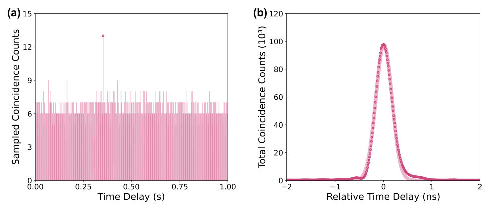
<figcaption class="paper-figure-caption"><b>Fig 1.</b> Fig. 1: Experimental results of the coarse- and fine-stage coincidence peak identification algorithm. (a) A coarse search using temporally subsampled timestamp streams and a 10 ns time-bin width localizes the approximate position of the coincidence peak. (b) The full timestamp records are then analyzed in the vicinity of the iden- tified peak using a 10 ps time-bin width to reconstruct the high-resolution g(2)(τ) distribution. The solid pink line denotes a Gaussian fit to the measured correlation profile.</figcaption>
</figure>
<figure class="paper-figure-card">
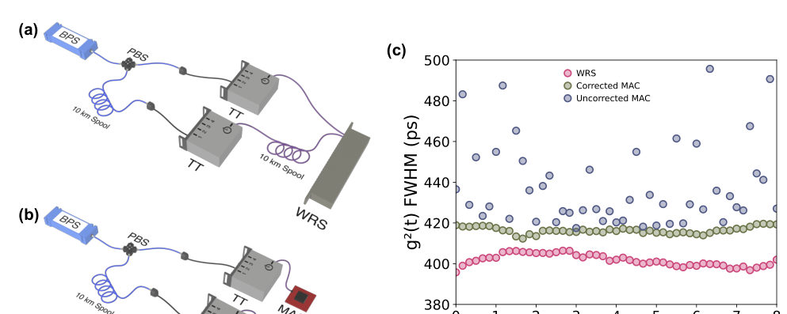
<figcaption class="paper-figure-caption"><b>Fig 2.</b> Fig. 2: Local experimental configurations at UTC employing 10 km fiber spools for comparison of the syn- chronization performance using (a) WRS-based and (b) MAC-based method. (c) Measured coincidence peak FWHM as a function of acquisition time over an 8-hour measurement session using WRS (pink), uncorrected MACs (blue), and drift-corrected MACs (green). The coincidences were sampled at 10-minute intervals, with each data point corresponding to a 60-second integration period.</figcaption>
</figure>
<figure class="paper-figure-card">

<figcaption class="paper-figure-caption"><b>Fig 3.</b> Fig. 3: (a) Comparison of the first (pink) and last (green) one-second intervals of a 1-minute acquisition using independent MACs, illustrating the displacement of the coincidence peak caused by accumulated timing drift between the MACs. (b) Coincidence peak position as a function of acquisition time over the same 1-minute in- terval. Each data point corresponds to the peak location extracted from a one-second segment of the timestamp stream. The solid pink line represents the time-dependent drift model constructed using piecewise linear fit. (c) Comparison of the reconstructed g(2)(τ) distributions obtained from the uncorrected MAC data (blue) and the same dataset after application of the...</figcaption>
</figure>
<figure class="paper-figure-card">
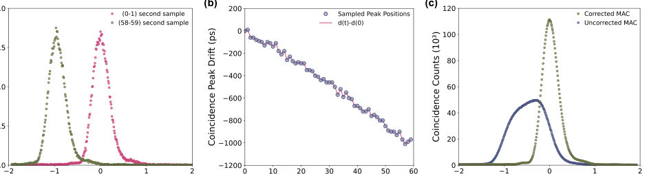
<figcaption class="paper-figure-caption"><b>Fig 4.</b> Fig. 4(a) and Fig. 4(b), respectively. The synchronization performance was again quantified by tracking the</figcaption>
</figure>
<figure class="paper-figure-card">

<figcaption class="paper-figure-caption"><b>Fig 5.</b> Fig. 4(c). The observed broadening corresponds to an accumulated timing drift of approximately 2 ns over the</figcaption>
</figure>
</div>

<p><strong>Summary.</strong> This work presents a novel method to synchronize remote quantum nodes using only independent miniature atomic clocks rather than dedicated timing links. By applying advanced computational post-processing techniques, the authors achieved timing stability comparable to state-of-the-art systems. This breakthrough establishes a scalable and topology-independent pathway for building large-scale quantum networks.</p>
<p><strong>Why it may be interesting.</strong> It provides an experimental blueprint for realizing scalable quantum networks by circumventing major infrastructure bottlenecks associated with timing distribution, which is crucial for future terrestrial and space-based quantum communication protocols.</p>
<details>
<summary>Detailed structure</summary>
<p><strong>Main problem.</strong> Achieving precise timing synchronization for distributed quantum networking nodes without relying on dedicated, infrastructure-heavy timing distribution links.</p>
<p><strong>Main result.</strong> The authors successfully demonstrated high-visibility Hong-Ou-Mandel interference across a metropolitan-scale fiber network using only independently operating atomic clocks and computational post-processing, matching benchmarks set by White Rabbit systems.</p>
<p><strong>Method.</strong> They employed a two-stage coincidence peak search algorithm combined with piecewise linear drift compensation applied to raw time-tagging data from miniature rubidium atomic clocks (MACs).</p>
<p><strong>Model / system.</strong> The experiment utilized a deployed metropolitan-scale telecom fiber network connecting three nodes, using MACs as the primary timing reference source for quantum state distribution.</p>
<p><strong>Key observables.</strong> Hong-Ou-Mandel (HOM) interference visibility, coincidence peak Full Width at Half Maximum (FWHM), and timing stability over 8 hours.</p>
<p><strong>Important parameters / regimes.</strong> Metropolitan scale deployment; rubidium atomic clock precision; $70\%$ HOM visibility threshold; $ ext{sub-nanosecond}$ timing performance goal.</p>
<p><strong>Assumptions / limitations.</strong> The residual frequency drift between independent MACs is slow and deterministic enough to be accurately modeled and corrected via post-processing algorithms.</p>
<p><strong>Figures summary.</strong> Figures illustrate the two-stage coincidence peak identification algorithm (coarse vs. fine search) and compare HOM visibility/FWHM performance across WRS, uncorrected MAC, and drift-corrected MAC in both lab and deployed settings.</p>
<p><strong>Paper structure.</strong> The paper progresses by first defining the synchronization challenge, detailing the computational method for handling large time offsets, validating the technique on local fiber spools (comparing FWHM), and culminating in the primary demonstration of high-visibility quantum interference across a real, deployed metropolitan network.</p>
</details>
<details>
<summary>Abstract</summary>
<p>Precise timing synchronization is essential for distributed quantum networking, enabling entanglement distribution, quantum teleportation, and entanglement swapping across remote nodes. Existing synchronization architectures rely on dedicated timing-distribution infrastructure, most notably White Rabbit networks, which constrain topology, scalability, and deployment in free-space and satellite environments. Here we demonstrate link-free synchronization of quantum network nodes using independently operating miniature rubidium atomic clocks and computational post-processing. We validate the approach on a deployed metropolitan-scale telecom fiber network spanning three geographically separated nodes. Following drift correction, atomic-clock-based synchronization achieves timing performance approaching that of a White Rabbit benchmark and remains stable over continuous 8-hour operation. As a stringent test of quantum-network functionality, we observe Hong-Ou-Mandel interference across spatially separated nodes with visibility exceeding 70%, statistically equivalent to that obtained using dedicated White Rabbit timing links. To the best of our knowledge, this represents the first observation of quantum interference across a deployed metropolitan-scale telecom fiber network synchronized entirely without dedicated timing-transfer infrastructure. These results establish atomic-clock-based synchronization as a scalable, topology-independent alternative to conventional timing-distribution architectures and a practical pathway toward terrestrial, airborne, and space-based quantum networks where dedicated timing links are unavailable.</p>
</details>
<p><sub><a href="#top">↑ back to top</a></sub></p>

<p><a id="paper-2606.14553"></a></p>
<h3 id="scaling-native-entanglement-generation-in-layered-semiconductors-with-quasi-phase-matching"><a href="http://arxiv.org/abs/2606.14553v1">Scaling native entanglement generation in layered semiconductors with quasi-phase matching</a></h3>
<p><strong>Authors:</strong> Benjamin Braun, Andrea Alessandrini, Josip Bajo, Philipp K. Jenke, Leone di Mauro Villari, Birui Yang, Zhi Hao Peng, P. James Schuck, Cory R. Dean, Andrea Marini, Philip Walther, Chiara Trovatello, Lee A. Rozema<br>
<strong>Type:</strong> both · <strong>Category:</strong> other · <strong>PDF:</strong> <a href="https://arxiv.org/pdf/2606.14553v1">https://arxiv.org/pdf/2606.14553v1</a><br>
<strong>Analysis basis:</strong> full PDF text, analyzed in chunks
<strong>Topic relevance:</strong> 🔥 <code>quantum optics experiment</code> <strong>4/5</strong> · <code>interference shaping light</code> <strong>3/5</strong> · <code>Keldysh / 2PI / non-Gaussian methods</code> <strong>1/5</strong> · <code>QC/QI experiment</code> <strong>1/5</strong> · <code>driven-dissipative phase transition</code> <strong>1/5</strong> · <code>entanglement &amp; information structure</code> <strong>1/5</strong></p>
<div class="figure-strip-hint">↔ Scroll figures horizontally</div>
<div class="paper-figures-scroll">
<figure class="paper-figure-card">
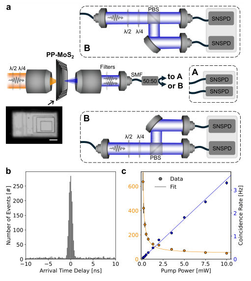
<figcaption class="paper-figure-caption"><b>Fig 1.</b> FIG. 1. a) Experimental schematic: A continuous wave (CW) pump laser (780 nm) is focused onto the PPTMD (see inset for a micrograph, scalebar 10 µm) on a SiO2 substrate using an aspheric lens (f=3.1 mm). The emitted signal is collected collinearly and collimated using a mi- croscope objective (NA=0.85). A combination of long-pass (1150 nm cut-off) and band-pass (1560 ± 6 nm) filters rejects the pump beam and photoluminescence background. The photon pairs are coupled to single-mode fiber (SMF) and sent to a fiber-based beam-splitter (50:50) which probabilistically separates the pairs into two spatial modes. From here, they can be directly detected (option A) using super-conducting nanowire...</figcaption>
</figure>
<figure class="paper-figure-card">
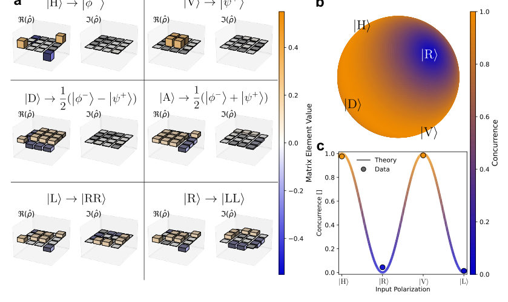
<figcaption class="paper-figure-caption"><b>Fig 2.</b> FIG. 2. a) Measured density matrices of the 2-photon states generated in PP-MoS2: The measurements shown were carried out on the 6th slab using a pump power of 8 mW and a band-pass filter (1560 ± 6 nm). We define the x-axis of the sample as the H-polarization (sample frame). Aligning the pump polarization along this axis results in the maximally entangled Bell-state ϕ− . Going to V-polarization in the sample frame generates the ψ+ -state. At diagonal polarization, a coherent superposition of these states is generated, which is still maximally entangled. Going to circular polarization completely erases the entanglement, resulting in a fully separable state. b) Simulated concurrence heatmap...</figcaption>
</figure>
<figure class="paper-figure-card">
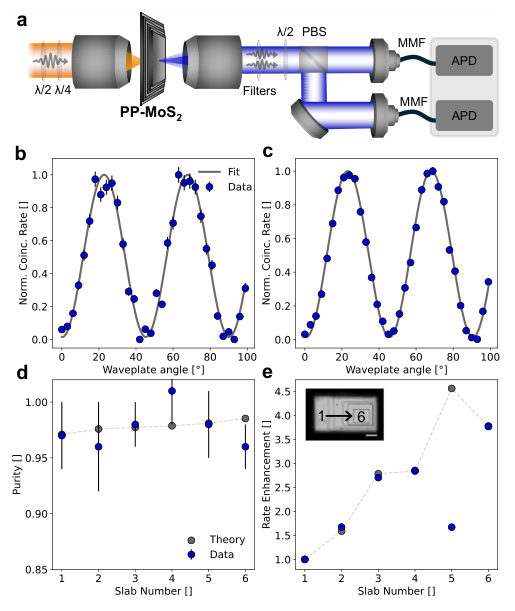
<figcaption class="paper-figure-caption"><b>Fig 3.</b> FIG. 3. a) Adapted experimental setup: the polarization of the emit- ted photon pairs is controlled with a half wave-plate (λ/2), then the photons are sent to a polarizing beam-splitter (PBS). Depending on their polarization state, they may split into the two output modes of the PBS or bunch in one mode. We couple both modes to a multi-mode fiber (MMF, 50 µm core size) and detect them with In-Ga-As avalanche photo-diodes (APDs). b) &amp; c) The coincidence rate is measured as a function of the wave-plate angle. We fit the data points to cos2(4x) function with a phase and background offset, where x is the wave-plate angle, in order to extract the visibility. We show example plots mea- sured on...</figcaption>
</figure>
</div>

<p><strong>Summary.</strong> This research demonstrates an advanced method for generating high-quality, polarization-entangled photon pairs using periodically poled van der Waals semiconductors. By engineering the nonlinearity via quasi-phase matching across multiple thin layers, they overcome material coherence length limitations inherent to these nanoscale sources. The combination of theory and experiment establishes a powerful platform for scalable quantum light source development.</p>
<p><strong>Why it may be interesting.</strong> This work is highly relevant as it pushes quantum light sources into nanoscale solid-state platforms, providing a pathway to engineer entanglement properties (like polarization) in systems where traditional bulk optics are impractical or inefficient.</p>
<details>
<summary>Detailed structure</summary>
<p><strong>Main problem.</strong> The primary goal is to efficiently generate high-fidelity, polarization-entangled photon pairs using Spontaneous Parametric Down-Conversion (SPDC) in ultrathin van der Waals semiconductors.</p>
<p><strong>Main result.</strong> By employing periodically-poled structures (PPTMDs), the pair-production rate can be scaled up significantly while maintaining entanglement fidelities exceeding 99% by utilizing quasi-phase matching.</p>
<p><strong>Method.</strong> The work combines rigorous theoretical modeling based on canonical quantization with detailed experimental characterization using quantum state tomography and coincidence measurements.</p>
<p><strong>Model / system.</strong> The system utilizes periodically poled TMDs (like $3R$-MoS$_2$) which act as nonlinear media. The theory models the interaction Hamiltonian derived from the second-order nonlinearity ($\chi^{(2)}$) across multiple stacked, sign-inverted slabs to achieve quasi-phase matching.</p>
<p><strong>Key observables.</strong> Entanglement fidelity, pair-production rate enhancement (ENH), and state purity ($P$) measured via two-photon interference visibility ($V$).</p>
<p><strong>Important parameters / regimes.</strong> The material coherence length ($L_c$), the periodicity of poling, and the relative phase/polarization angle ($    heta, \phi$) controlling the Bell state mixture.</p>
<p><strong>Assumptions / limitations.</strong> Key approximations include the undepleted pump approximation and using first-order Dyson perturbative expansion in the theoretical model. Experimentally, high alignment precision is crucial for scaling.</p>
<p><strong>Figures summary.</strong> Figures illustrate the experimental setup (CW laser on PPTMDs), measured density matrices confirming Bell states ($\vert\phi^-
angle, \vert\psi^+
angle$), and quantitative plots showing entanglement dependence on pump polarization angle and pair generation rate enhancement vs. slab number.</p>
<p><strong>Paper structure.</strong> The paper progresses from identifying the limitations of bulk SPDC to proposing PPTMDs for QPM. It details the theoretical framework using Hamiltonian quantization, presents experimental measurements confirming state generation and fidelity, and concludes by analyzing the interplay between crystal symmetry and engineered periodicity.</p>
</details>
<details>
<summary>Abstract</summary>
<p>Efficient generation of entangled photons typically relies on spontaneous parametric down-conversion (SPDC) in phase-matched macroscopic nonlinear media. However, generating entanglement under phase-matching constraints requires additional bulk optics or interferometers. In contrast, ultrathin van der Waals semiconductors - such as transition metal dichalcogenides (TMDs) - exhibit strong enough optical nonlinearities for SPDC to be observed from subwavelength-thick media, thereby bypassing conventional phase-matching constraints. In this microscopic domain, the intrinsic crystal symmetry governs the nonlinear optical response, enabling the native generation of polarization-entangled photon pairs. However, generating these states efficiently has been fundamentally restricted by the material's coherence length ($L_c$), which limits the attainable conversion efficiency. Here, we investigate periodically-poled TMDs (PPTMDs) designed to scale up this interaction via quasi-phase matching. We demonstrate that mechanically flipping the sign of the nonlinearity at precise intervals of $L_c$ introduces quasi-phase matching, that scales the pair-production rate while preserving the pristine, symmetry-generated polarization entanglement, with fidelities exceeding 99%. Backed by a rigorous theoretical model, our work clarifies the interplay between crystal symmetry and propagation effects in thin nonlinear media, providing a new avenue for engineering quantum light in nanophotonic systems.</p>
</details>
<p><sub><a href="#top">↑ back to top</a></sub></p>

<p><a id="paper-2606.14231"></a></p>
<h3 id="spin-mixing-induced-dynamics-of-spinor-solitons-in-math201math-bose-einstein-condensates"><a href="http://arxiv.org/abs/2606.14231v1">Spin mixing induced dynamics of spinor solitons in $F=1$ Bose Einstein condensates</a></h3>
<p><strong>Authors:</strong> T. Panagos, A. Romero-Ros, G. C. Katsimiga, P. Schmelcher, P. G. Kevrekidis<br>
<strong>Type:</strong> theory · <strong>Category:</strong> quantum gases · <strong>PDF:</strong> <a href="https://arxiv.org/pdf/2606.14231v1">https://arxiv.org/pdf/2606.14231v1</a><br>
<strong>Analysis basis:</strong> full PDF text, analyzed in chunks
<strong>Topic relevance:</strong> 🔥 <code>analog quantum simulation</code> <strong>4/5</strong> · <code>exotic spin models in light-matter</code> <strong>3/5</strong> · <code>non-equilibrium dynamics</code> <strong>2/5</strong> · <code>Keldysh / 2PI / non-Gaussian methods</code> <strong>1/5</strong> · <code>methods for driven-dissipative</code> <strong>1/5</strong></p>
<div class="figure-strip-hint">↔ Scroll figures horizontally</div>
<div class="paper-figures-scroll">
<figure class="paper-figure-card">
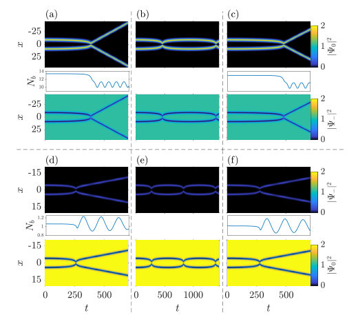
<figcaption class="paper-figure-caption"><b>Fig 1.</b> Figure 1. Example of the spatio-temporal evolution of the densities of the dark (|Ψ0|2) and bright (|Ψ−|2) components of an OP two-DBD (two-BDB) [(a)–(c)] ([(d)–(f)]) system in case of the F- [(a), (d)], NS- [(b), (e)] and AF- [(c), (f)] interactions, for d0 = 18 and q = −0.16 (d0 = 8 and q = 0.835) [(a)–(c)] ([(d)–(f)]). In case of the F- and AF- systems, the time evolution of the number of particles of the bright components (Nb) is depicted as well. The (|Ψ+|2) component is not displayed here, since Ψ+(t) = Ψ−(t), as discussed in Section II C.</figcaption>
</figure>
<figure class="paper-figure-card">
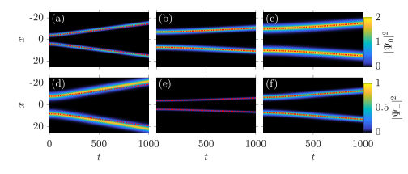
<figcaption class="paper-figure-caption"><b>Fig 2.</b> Figure 2. Characteristic results of the comparison between the spatio-temporal evolution of the IP systems and the tra- jectories predicted from the model (red dotted lines). The depicted cases: (a) two-DBD F-system with q = −0.72 and d0 = 8 (F = 0.96), (b) two-DBD NS-system with q = −0.32 and d0 = 14 (F = 1), (c) two-DBD AF-system with q = −0.12 and d0 = 20 (F = 0.98), (d) two-BDB F-system with q = 0.145 and d0 = 16 (F = 0.86), (e) two-BDB NS-system with q = 0.895 and d0 = 8 (F = 1), (f) two-BDB AF-system with q = 0.26 and d0 = 14 (F = 0.99).</figcaption>
</figure>
<figure class="paper-figure-card">
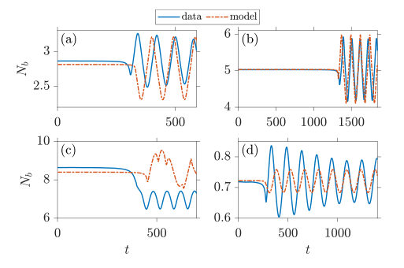
<figcaption class="paper-figure-caption"><b>Fig 3.</b> Figure 4. Characteristic results of the comparison between the time evolution of the number of particles of the bright components (Nb) and the model predictions in case of the OP system. The depicted cases: (a) two-DBD F-system with q = −0.67 and d0 = 10, (b) two-DBD AF-system with q = −0.36 and d0 = 16, (c) two-BDB F-system with q = 0.16 and d0 = 18 (F = 0), (d) two-BDB AF-system with q = 0.835 and d0 = 8.</figcaption>
</figure>
<figure class="paper-figure-card">
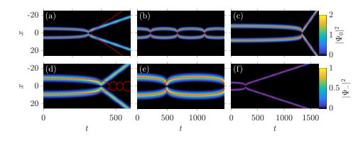
<figcaption class="paper-figure-caption"><b>Fig 4.</b> Figure 3. Same as Fig. 2 but for the OP configuration. The depicted cases: (a) two-DBD F-system with q = −0.67 and d0 = 10 (F = 0.71), (b) two-DBD NS-system with q = −0.56 and d0 = 10 (F = 0.96), (c) two-DBD AF-system with q = −0.36 and d0 = 16 (F = 0.88), (d) two-BDB F-system with q = 0.16 and d0 = 18 (F = 0), (e) two-BDB NS-system with q = 0.12 and d0 = 20 (F = 0.80), (f) two-BDB AF-system with q = 0.835 and d0 = 8 (F = 0.98).</figcaption>
</figure>
<figure class="paper-figure-card">
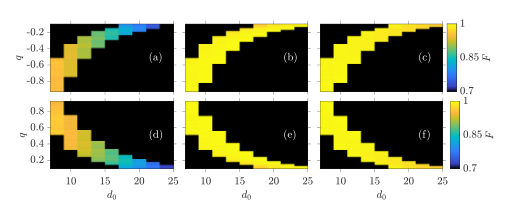
<figcaption class="paper-figure-caption"><b>Fig 5.</b> Figure 5. Fidelities of the IP systems: (a) two-DBD F-system, (b) two-DBD NS-system, (c) two-DBD AF-system, (d) two- BDB F-system, (e) two-BDB NS-system, (f) two-BDB AF- system.</figcaption>
</figure>
</div>

<p><strong>Summary.</strong> This paper analyzes the interaction dynamics of spinor solitons in $F=1$ BECs, examining configurations like dark-bright-dark. The research develops an effective Lagrangian model whose predictions are tested against numerical simulations. It reveals that while attraction can form bound states, spin interactions cause these to break via particle exchange, highlighting the complexity beyond simple non-spinor models.</p>
<p><strong>Why it may be interesting.</strong> This work is highly relevant as it tackles complex non-linear dynamics in ultracold atomic systems, specifically addressing how internal spin degrees of freedom modify classical soliton interactions and lead to particle redistribution.</p>
<details>
<summary>Detailed structure</summary>
<p><strong>Main problem.</strong> The study investigates the spin-mixing-induced dynamics of spinor solitons within $F=1$ Bose Einstein Condensates (BECs), focusing on interactions between dark and bright soliton configurations.</p>
<p><strong>Main result.</strong> While initial attraction can lead to bound states, these states break down due to particle exchange dynamics induced by spin interactions. An effective classical model successfully captures the essential features of soliton behavior in most cases.</p>
<p><strong>Method.</strong> The authors employ numerical simulations using Runge-Kutta integrators and develop an effective classical model based on a Lagrangian approach to describe the time evolution of variational parameters.</p>
<p><strong>Model / system.</strong> The system is modeled as a 1D spinor $F=1$ BEC governed by dimensionless spinor Gross-Pitaevskii equations (SGPEs) for three hyperfine states. The dynamics are analyzed in terms of dark and bright solitons interacting via spin-mixing terms.</p>
<p><strong>Key observables.</strong> Soliton densities ($|\Psi_m|^2$), interspecies particle exchange, effective interaction strength (repulsive/attractive), and variational parameters ($\xi(t)$, $\varphi(t)$).</p>
<p><strong>Important parameters / regimes.</strong> Spin-dependent coefficient $g_s$ (determining F or AF interactions), initial phase difference ($\Delta\phi$), and the quadratic Zeeman term ($q$).</p>
<p><strong>Assumptions / limitations.</strong> The effective model relies on the adiabatic approximation, which breaks down when large soliton overlaps occur, particularly in out-of-phase (OP) configurations.</p>
<p><strong>Figures summary.</strong> Figures compare the predictions of the effective classical model against numerical simulations for both In-Phase (IP) and Out-of-Phase (OP) interactions, showing fidelity metrics and particle number evolution.</p>
<p><strong>Paper structure.</strong> The paper first establishes the governing SGPEs and analyzes basic soliton interactions. It then develops an effective Lagrangian model to describe two-soliton dynamics, comparing its predictions against detailed numerical simulations for various phase configurations.</p>
</details>
<details>
<summary>Abstract</summary>
<p>We explore soliton interactions in a homogeneous spinor $F=1$ Bose Einstein Condensate (BEC) in the presence of a magnetic field, focusing on dark bright dark and bright dark bright configurations. We investigate how these interactions depend on the phase differences among bright solitons and their influence during the dynamics. Our findings align with prior non spinor results, i.e., repulsion among in phase bright solitons and attraction among out of phase pairs in self repulsive atomic BECs. The potential bright soliton attraction, added to the short range repulsion of dark dark soliton interactions, can lead to bound states. However, we find that these bound states break in the presence of spinor interactions due to the particle exchange dynamics between the hyperfine states of the components. Additonally, we develop an effective classical model to describe the soliton dynamics, using a Lagrangian approach. The accuracy of the model is tested by comparing it against numerical simulations. Our results suggest that the proposed model captures the essential features of soliton behavior in the presence of spin interactions, and provides congruent soliton trajectories and interspecies particle exchange dynamics in most of the cases.</p>
</details>
<p><sub><a href="#top">↑ back to top</a></sub></p>

<p><a id="paper-2606.14365"></a></p>
<h3 id="certification-of-the-genuine-resolution-of-photon-number-resolving-detectors"><a href="http://arxiv.org/abs/2606.14365v1">Certification of the genuine resolution of photon number resolving detectors</a></h3>
<p><strong>Authors:</strong> Jef Pauwels, Towsif Taher, Roope Uola, Boris Korzh, Nicolas Brunner, Pavel Sekatski<br>
<strong>Type:</strong> both · <strong>Category:</strong> quantum information and computing · <strong>PDF:</strong> <a href="https://arxiv.org/pdf/2606.14365v1">https://arxiv.org/pdf/2606.14365v1</a><br>
<strong>Analysis basis:</strong> full PDF text, analyzed in chunks
<strong>Topic relevance:</strong> 🔥 <code>quantum measurements</code> <strong>4/5</strong> · <code>quantum optics experiment</code> <strong>3/5</strong> · <code>QC/QI experiment</code> <strong>1/5</strong> · <code>measurement-induced transitions</code> <strong>1/5</strong> · <code>methods for driven-dissipative</code> <strong>1/5</strong></p>
<div class="figure-strip-hint">↔ Scroll figures horizontally</div>
<div class="paper-figures-scroll">
<figure class="paper-figure-card">
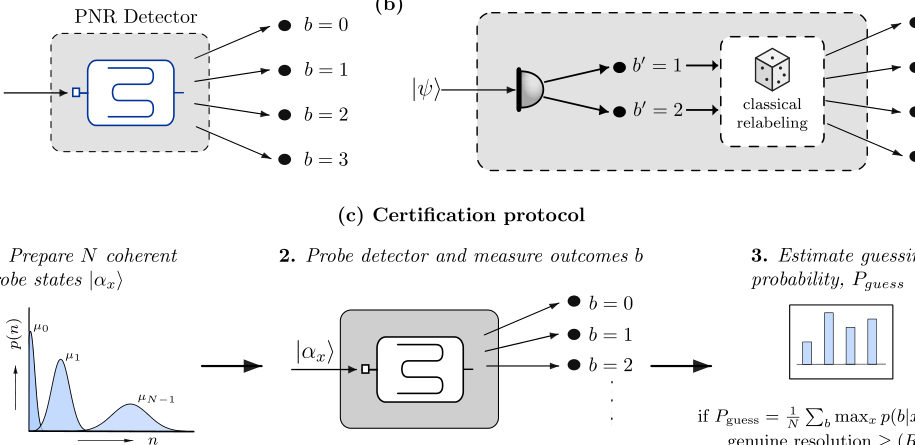
<figcaption class="paper-figure-caption"><b>Fig 1.</b> FIG. 1. Certifying the genuine resolution of a PNR detector. (a) Our task is to quantify the ability of a given PNR detector to count the number of photons. Consider the device features four possible outcomes b. The main question is whether this device is indeed able to count the number of incoming photons, or whether it can be simulated by a simpler detector with lower resolution. As illustrated in (b), one can imagine a device featuring a simple binary (click/no-click) detector followed by classical post-processing to produce the observed four-valued outcome. (c) In order to assess the genuine resolution of our detector, we devise a simple, efficient and scalable test based on a guessing...</figcaption>
</figure>
<figure class="paper-figure-card">
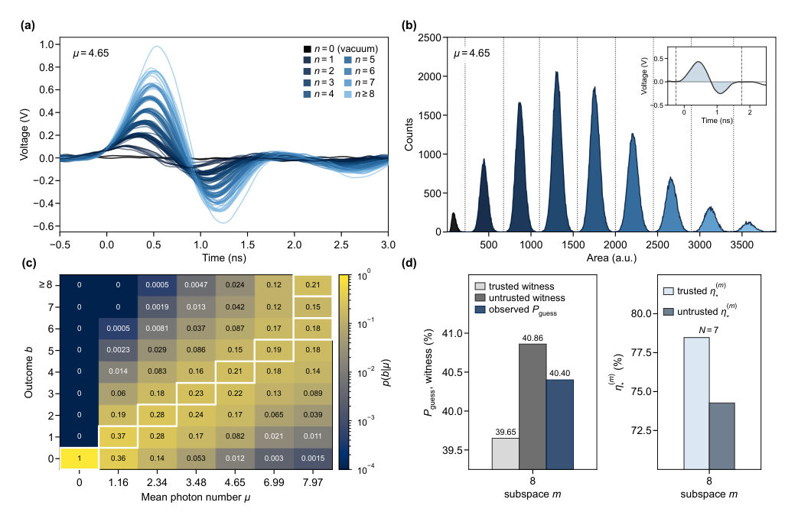
<figcaption class="paper-figure-caption"><b>Fig 2.</b> FIG. 2. Data acquisition and analysis for the 28-pixel PNR-SNSPD. a) Representative oscilloscope waveforms for an input coherent state (µ = 4.65), where voltage corresponds to the number of simultaneous pixel clicks (n). b) Histogram of the integrated pulse areas for µ = 4.65 for 2.5 × 105 non-zero detection events. Well-resolved peaks enable the unambiguous assignment of the (discrete) outcome b ∈{0, ..., 8} via the classification thresholds (dashed vertical lines). Inset: a single waveform on an expanded time axis. The shaded region indicates the 2 ns integration window. c) Measured conditional outcome distributions p(b|µx) for the input states µx with x {1, ..., 7}. For each output b,...</figcaption>
</figure>
<figure class="paper-figure-card">
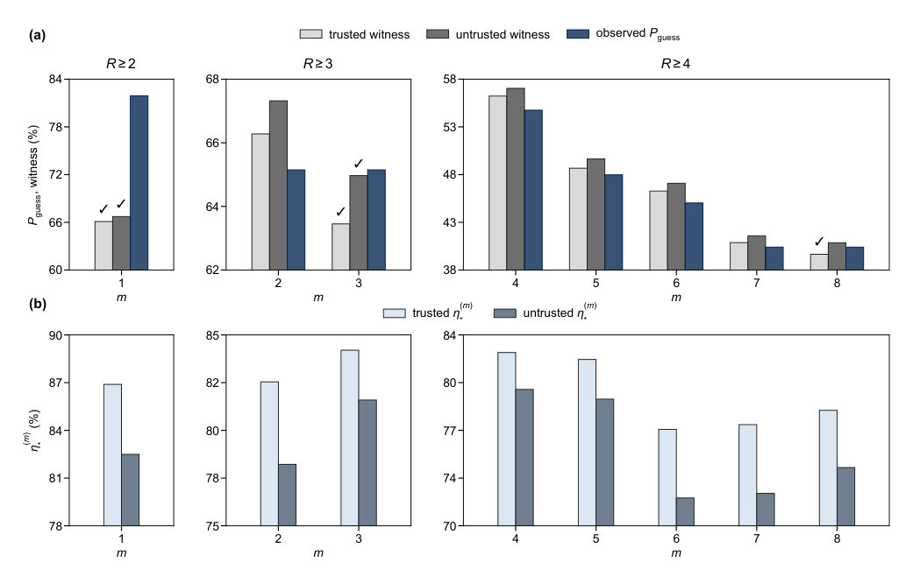
<figcaption class="paper-figure-caption"><b>Fig 3.</b> FIG. 3. Experimental certification of genuine resolution and effective efficiency. By considering various subsets of input states, the data in Fig.2(c) is used to certify lower bounds on the genuine resolution R and the effective efficiency, for different photon number subspace m. (a) In the 0-1 photon subspace (m=1), a maximal genuine resolution of R = 2 is certified. A genuine resolution R ≥3 is certified in the subspace with up to m = 3 photons; note that, with our data, this is not possible for m = 2. Finally, in order to certify a resolution R ≥4, we must increase the subspace up to m = 8 photons. The statistical error is negligible in the trusted scenario, but increases in the...</figcaption>
</figure>
<figure class="paper-figure-card">
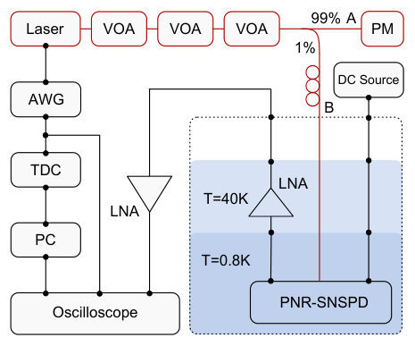
<figcaption class="paper-figure-caption"><b>Fig 4.</b> FIG. 4. Experimental setup for data acquisition. Coher- ent states are generated by a 1550 nm pulsed laser driven by an arbitrary waveform generator (AWG). The state intensities are controlled via variable optical attenuators (VOAs) and monitored using a 99:1 beam splitter and a power meter. The attenuated pulses probe a 28-pixel PNR-SNSPD operating at 0.8 K. The detector’s output signal, which encodes the number of firing pixels, is amplified both cryogenically (40 K) and at room temperature using low-noise amplifiers (LNAs) before being digitized on a high-resolution oscilloscope. A time-to-digital converter (TDC) measures the total number of laser pulses.</figcaption>
</figure>
</div>

<p><strong>Summary.</strong> This paper introduces an operational framework to certify the genuine photon-number resolving capability of PNR detectors. By employing a 'guessing game' protocol with coherent state probes, the authors developed a scalable method to quantify detector performance without full tomography. They successfully applied this to test a superconducting nanowire detector, establishing critical benchmarks for efficiency and resolution.</p>
<p><strong>Why it may be interesting.</strong> This work provides a rigorous, scalable diagnostic tool for characterizing fundamental quantum hardware components (PNR detectors) that are crucial building blocks for quantum communication and computation protocols.</p>
<details>
<summary>Detailed structure</summary>
<p><strong>Main problem.</strong> The primary challenge is establishing a practical, operational metric to certify the genuine resolution (the ability to distinguish between different photon numbers) of Photon-Number-Resolving (PNR) detectors.</p>
<p><strong>Main result.</strong> The authors developed a scalable protocol using coherent state probes that successfully certified genuine four-outcome resolution for a tested PNR-SNSPD, while also quantifying the critical dependence of this resolution on detector efficiency.</p>
<p><strong>Method.</strong> They introduced an operational framework based on quantum measurement theory and utilized a 'guessing game' protocol involving weak coherent states to derive lower bounds on the genuine resolution by comparing measured guessing probabilities against theoretical witness inequalities.</p>
<p><strong>Model / system.</strong> The work focuses on characterizing PNR detectors, specifically testing a 28-pixel superconducting nanowire single-photon detector (PNR-SNSPD). The analysis is framed within the context of efficiency-limited quantum channels acting on Fock states.</p>
<p><strong>Key observables.</strong> Genuine Resolution ($R$), Guessing Probability ($P_{	ext{guess}}$), Effective Efficiency ($\eta^*_m$), and statistical significance ($Z$).</p>
<p><strong>Important parameters / regimes.</strong> Detector efficiency ($\eta$), the maximum photon number subspace limit ($m$), and the intensity bound ($I$) used in untrusted source models.</p>
<p><strong>Assumptions / limitations.</strong> The protocol avoids full measurement tomography by relying only on measurable input-output statistics from coherent probes; statistical analysis uses conservative bounds like Azuma–Hoeffding inequality.</p>
<p><strong>Figures summary.</strong> Figures illustrate the conceptual framework of quantifying photon counting ability, show data acquisition workflows using oscilloscope traces and histogram analysis, and present tables summarizing threshold efficiencies ($\eta_{	ext{th}}$) and certified effective efficiencies ($\eta^*_m$) for various subspaces ($m$).</p>
<p><strong>Paper structure.</strong> The paper progresses from defining the theoretical gap (lack of certification metric) to proposing an operational framework using coherent state probes. It then details the mathematical derivation of witness inequalities, presents experimental data analysis comparing measured $P_{	ext{guess}}$ against trusted/untrusted bounds, and concludes by reporting certified resolution levels and effective efficiencies.</p>
</details>
<details>
<summary>Abstract</summary>
<p>Photon-number-resolving (PNR) detectors are essential components of photonic quantum technologies, yet thus far, no practical metric exists to certify how many photons they can genuinely resolve in a single measurement. Here we introduce an operational framework for quantifying the capability of a PNR detector to distinguish between different numbers of photons, i.e. its genuine resolution. In turn, we develop a practical and scalable protocol for certifying the genuine resolution of a detector, which is based on coherent state probes. We apply the method to a 28-pixel photon-number-resolving superconducting nanowire single-photon detector (PNR-SNSPD) and certify genuine four-outcome resolution. Our work highlights the critical requirements in terms of detector efficiency towards achieving high genuine resolution. This approach provides an operational benchmark for PNR detectors and fills a crucial gap in the characterization of photonic quantum devices.</p>
</details>
<p><sub><a href="#top">↑ back to top</a></sub></p>

<p><a id="paper-2606.13810"></a></p>
<h3 id="universal-crossovers-of-stabilizer-entropy-beyond-criticality"><a href="http://arxiv.org/abs/2606.13810v1">Universal Crossovers of Stabilizer Entropy Beyond Criticality</a></h3>
<p><strong>Authors:</strong> Reyhaneh Khasseh, E. A. Ramirez Trino, M. A. Rajabpour<br>
<strong>Type:</strong> theory · <strong>Category:</strong> statistical mechanics · <strong>PDF:</strong> <a href="https://arxiv.org/pdf/2606.13810v1">https://arxiv.org/pdf/2606.13810v1</a><br>
<strong>Analysis basis:</strong> full PDF text, analyzed in chunks
<strong>Topic relevance:</strong> 🔥 <code>entanglement &amp; information structure</code> <strong>4/5</strong> · <code>non-equilibrium universality</code> <strong>2/5</strong> · <code>Frenkel-Kontorova</code> <strong>1/5</strong> · <code>analog quantum simulation</code> <strong>1/5</strong> · <code>exotic spin models in light-matter</code> <strong>1/5</strong> · <code>non-equilibrium dynamics</code> <strong>1/5</strong></p>
<div class="figure-strip-hint">↔ Scroll figures horizontally</div>
<div class="paper-figures-scroll">
<figure class="paper-figure-card">
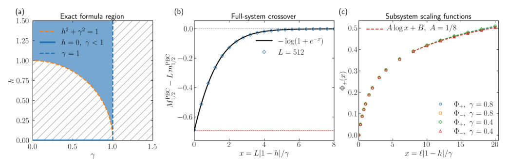
<figcaption class="paper-figure-caption"><b>Fig 1.</b> FIG. 1. Universal scaling structures of the stabilizer R´enyi entropy. (a) Exact-formula region for the periodic-chain and subsystem analysis in the (γ, h) plane. The orange dashed curve denotes h2 + γ2 = 1, the black dashed line denotes γ = 1, and the solid blue line along h = 0 indicates the additional exact result for γ &lt; 1. The shaded blue region indicates the exact-formula regime, while the hatched regions are outside this regime. (b) Full-system finite-size crossover. After subtracting the volume-law contribution L mPBC 1/2 , the periodic-chain data for L = 512 follow the universal crossover function −log(1+e−x) with x = L|1 −h|/γ. The horizontal dashed lines mark the critical value...</figcaption>
</figure>
<figure class="paper-figure-card">
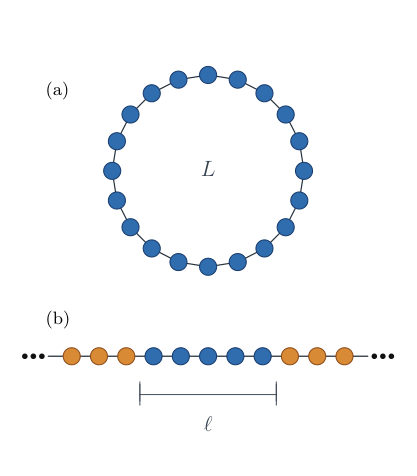
<figcaption class="paper-figure-caption"><b>Fig 2.</b> FIG. 2. Lattice configurations. (a) Finite periodic chain with even length L. (b) Infinite chain restricted to a contiguous subsystem of length ℓ.</figcaption>
</figure>
<figure class="paper-figure-card">
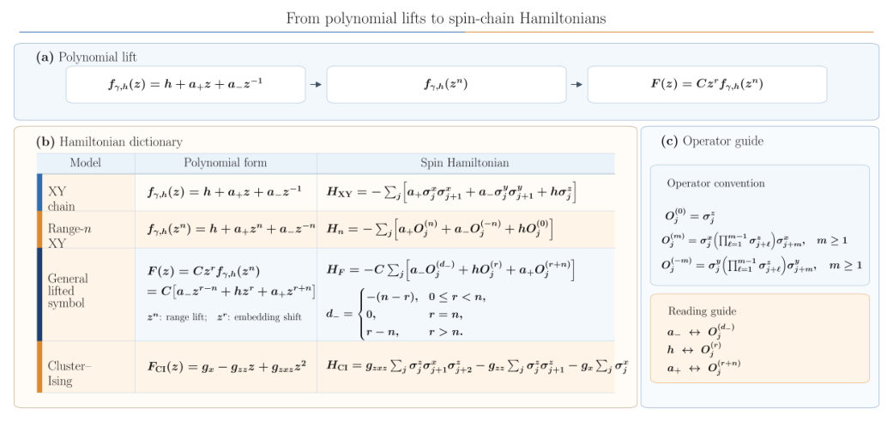
<figcaption class="paper-figure-caption"><b>Fig 3.</b> FIG. 3. Dictionary between Laurent-polynomial symbols and spin-chain Hamiltonians. Panel (a) shows the successive trans- formations fγ,h(z) 7→fγ,h(zn) 7→F(z) = Czrfγ,h(zn). Panel (b) lists the representative symbol families used in the paper and their corresponding spin-chain Hamiltonians, with a± = (1 ± γ)/2. Panel (c) defines the string operators O(m) j : positive indices</figcaption>
</figure>
<figure class="paper-figure-card">
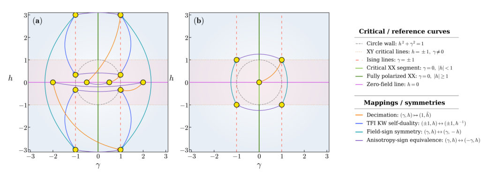
<figcaption class="paper-figure-caption"><b>Fig 4.</b> FIG. 4. Parameter space of the anisotropic XY chain. The dashed curve h2 + γ2 = 1 separates oscillatory and ordered regimes. The lines h = ±1, γ = ±1, and γ = 0, |h| &lt; 1, denote the anisotropic critical, Ising, and critical XX lines, respectively. The zero-field line is special: parity decimation maps (γ, 0) to the TFI point (1,eh), with eh = (1 −γ)/(1 + γ). Arrows denote decimation, Kramers–Wannier duality, and unitary sign equivalences. The marked points organize two orbits. All points within a given orbit have the same SRE, with the appropriate sector or interval-algebra matching.</figcaption>
</figure>
<figure class="paper-figure-card">
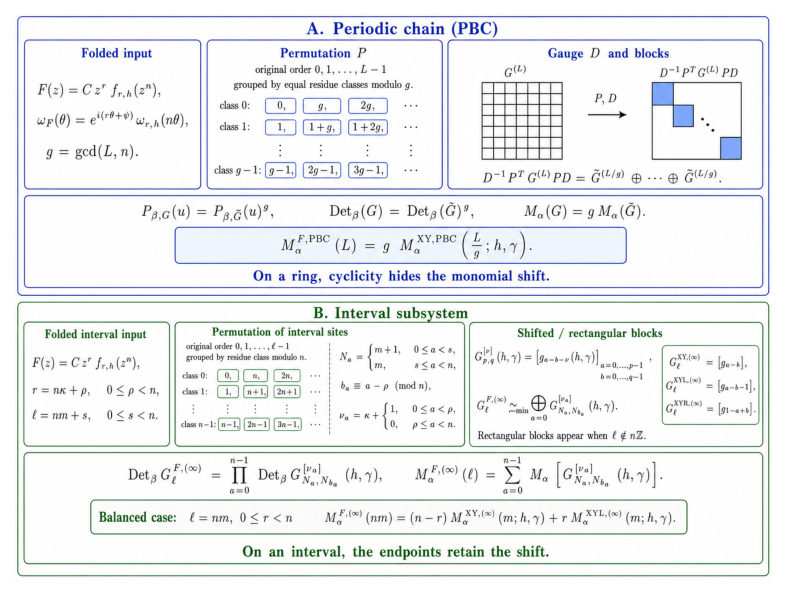
<figcaption class="paper-figure-caption"><b>Fig 5.</b> FIG. 5. Summary of the exact decimation structure and SRE correspondences used throughout the work. A. Periodic chain: correlation matrices decompose into independent G-blocks after site permutations and diagonal gauge transformations, leading to factorization of the generating function and additive SRE. B. Interval subsystem: the same folding acts on Toeplitz truncations, but the endpoints retain the monomial shift, producing ordinary, shifted, and, when ℓ/∈nZ, rectangular blocks; consequently, the determinant sums factorize, and the subsystem SRE becomes additive.</figcaption>
</figure>
</div>

<p><strong>Summary.</strong> This paper rigorously calculates the Stabilizer Rényi entropy for solvable spin chains across various physical geometries. By deriving exact finite-size formulas using Pfaffian methods, it establishes a lattice benchmark that precisely maps out how entanglement measures behave when moving away from critical points into massive or crossover regimes.</p>
<p><strong>Why it may be interesting.</strong> The work provides rigorous, exact lattice results for a complex entanglement measure (SRE) in critical/crossover regimes, offering crucial benchmarks for theoretical models derived from Quantum Field Theory and CFT.</p>
<details>
<summary>Detailed structure</summary>
<p><strong>Main problem.</strong> The primary goal is understanding how the scaling structure of Stabilizer Rényi entropy (SRE) behaves in quantum many-body systems when moving away from critical points into massive or crossover regimes.</p>
<p><strong>Main result.</strong> Exact finite-size formulas are derived for SRE in both periodic and subsystem geometries, providing a lattice benchmark that extends QFT descriptions beyond isolated conformal points.</p>
<p><strong>Method.</strong> The authors use exact solvability techniques applicable to free-fermion spin chains, deriving results via Pfaffian methods and analyzing the factorization properties of correlation matrices across different boundary conditions (periodic vs. interval).</p>
<p><strong>Model / system.</strong> The study focuses on a broad class of finite-range spin chains, particularly the anisotropic XY chain, analyzed in both full periodic geometry (ring) and as an embedded subsystem (interval).</p>
<p><strong>Key observables.</strong> Stabilizer Rényi entropy ($    ext{SRE}$), $   ext{Det}_1(G)$ (absolute minor determinant of the correlation matrix), and various scaling functions ($\Phi_{\chi}(\sigma)$).</p>
<p><strong>Important parameters / regimes.</strong> The anisotropy parameter ($h$), the coupling strength ($\gamma$), system size ($L$ or $\ell$), and the Rényi index ($\alpha=1/2$).</p>
<p><strong>Assumptions / limitations.</strong> The analysis relies on specific algebraic structures (Toeplitz/periodic matrices) that allow the intractable absolute-minor problem to be reduced to solvable determinant/Pfaffian forms.</p>
<p><strong>Figures summary.</strong> Figures illustrate parameter spaces showing critical lines ($h^2 + \gamma^2 = 1$) and compare exact formulas derived for periodic vs. interval geometries, highlighting boundary effects.</p>
<p><strong>Paper structure.</strong> The paper systematically analyzes SRE in different physical settings: first the full periodic chain (volume law, cusp), then the subsystem geometry (boundary contributions via Pfaffians), and finally comparing three specific block representations ($  ext{XY}$, $ ext{XYR}$, $    ext{XYL}$) to establish universal scaling laws across regimes.</p>
</details>
<details>
<summary>Abstract</summary>
<p>Stabilizer Rényi entropy has emerged as a probe of nonstabilizerness in quantum many-body systems, but its scaling structure beyond critical points remains poorly understood compared with entanglement entropy. Recent field-theory approaches indicate that stabilizer entropy contains universal critical data and boundary-sensitive terms, raising the question of how these structures extend into massive and crossover regimes. We address this problem for a broad class of finite-range spin chains at Rényi index one-half. We derive exact finite-size formulas for both full periodic chains and finite intervals of the infinite chain, making the universal crossover from critical to noncritical behavior analytically accessible. In periodic geometry, the entropy obeys a volume law away from criticality and exhibits a universal finite-size crossover controlled by the competition between system size and correlation length. We also show that the large-scale SRE density develops a cusp across the field-tuned critical line, while the XX endpoint is governed by a distinct scaling regime associated with the saturation point. In the subsystem geometry, the interval entropy separates bulk critical behavior from boundary contributions generated by the way the finite region cuts the infinite chain. The crossover from critical to massive behavior is then encoded in boundary constants and universal functions controlled by the correlation length. Through exact stabilizer-entropy correspondences, the scaling theory extends to internal XY reductions, Finite-range spin chains, and Cluster--Ising representatives. Our results provide an exact lattice benchmark for the emerging QFT description of stabilizer entropy beyond isolated conformal points.</p>
</details>
<p><sub><a href="#top">↑ back to top</a></sub></p>

<p><a id="paper-2606.13961"></a></p>
<h3 id="an-integrated-ultrahigh-vacuum-cluster-tool-for-diamond-surface-science-and-single-nitrogen-vacancy-center-measurements"><a href="http://arxiv.org/abs/2606.13961v1">An integrated ultrahigh vacuum cluster tool for diamond surface science and single nitrogen-vacancy center measurements</a></h3>
<p><strong>Authors:</strong> Zhiyang Yuan, Sorawis Sangtawesin, Lila V. H. Rodgers, Kalliope Zervas, James J. Allred, Jared Rovny, Patryk Gumann, Nathalie P. de Leon<br>
<strong>Type:</strong> experiment · <strong>Category:</strong> quantum information and computing · <strong>PDF:</strong> <a href="https://arxiv.org/pdf/2606.13961v1">https://arxiv.org/pdf/2606.13961v1</a><br>
<strong>Analysis basis:</strong> full PDF text, analyzed in chunks
<strong>Topic relevance:</strong> 🔥 <code>QC/QI experiment</code> <strong>4/5</strong> · <code>spintronics-quantum-optics interface</code> <strong>3/5</strong> · <code>quantum measurements</code> <strong>1/5</strong> · <code>quantum optics experiment</code> <strong>1/5</strong></p>
<div class="figure-strip-hint">↔ Scroll figures horizontally</div>
<div class="paper-figures-scroll">
<figure class="paper-figure-card">
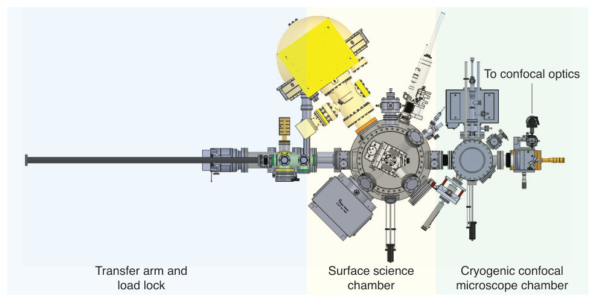
<figcaption class="paper-figure-caption"><b>Fig 1.</b> FIG. 1. Schematic (top view) of the ultrahigh vacuum (UHV) cluster tool for diamond surface science and nitrogen-vacancy (NV) center characterization. The system is configured in a linear cluster geometry and comprises three main modules: a load lock, a surface science chamber, and a cryogenic confocal microscope chamber. To accommodate multiple tools, the surface science chamber has a body outer diameter (OD) of 16.5 in. (419 mm) and a height of 18 in. (457 mm). The specific tools are labeled and described in Fig. 7. The cryogenic confocal microscope chamber has a body OD of 10 in. (254 mm) and a height of 17.5 in. (445 mm).</figcaption>
</figure>
<figure class="paper-figure-card">
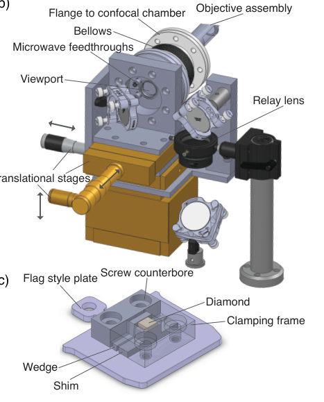
<figcaption class="paper-figure-caption"><b>Fig 2.</b> FIG. 2. (a) Top view of the cryogenic confocal microscope cham- ber, imaged through the top viewport. (b) Design of the translation stages for the UHV confocal microscope. The objective assembly is mounted on the viewport flange, which is connected to the cryo- genic confocal microscope chamber via a bellows to allow flexible movement. Two mirrors are mounted on different levels of the trans- lation stages to preserve the optical alignment during stage move- ment. (c) Diamond sample mount for sample processing and confo- cal measurement. The clamping frame is rendered semi-transparent to show the underlying shim and wedge. Assembly parts are made of molybdenum. The assembly is mounted on a...</figcaption>
</figure>
<figure class="paper-figure-card">
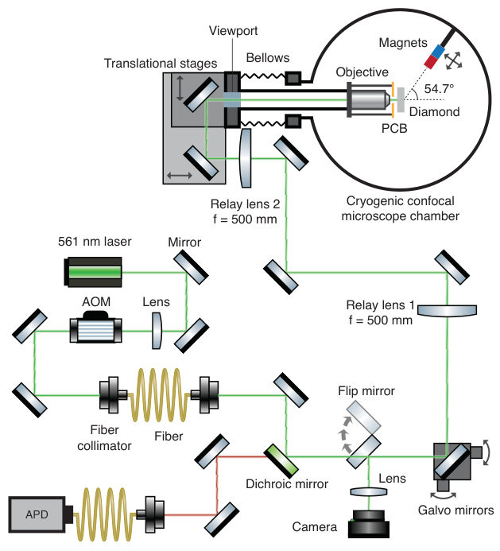
<figcaption class="paper-figure-caption"><b>Fig 3.</b> FIG. 3. Optical setup of the confocal microscope. A 561 nm laser is coupled to an acousto-optic modulator (AOM) to enable pulsed optical excitation for fast spin readout of NV centers. The beam is focused onto the AOM with a plano-convex lens to achieve a rise time of around 20 ns. In the confocal configuration, a pair of galvanometer (galvo) mirrors scans the lateral beam position at the objective focal plane. Two relay lenses arranged in a 4-f configuration image the scanning point from the galvo mirrors onto the back aperture of the UHV objective. Distances in the schematic are not to scale. The UHV objective can be translated relative to the diamond sample using external translation...</figcaption>
</figure>
<figure class="paper-figure-card">
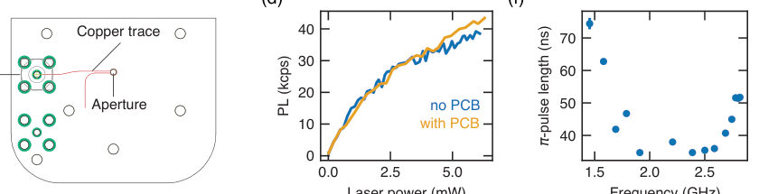
<figcaption class="paper-figure-caption"><b>Fig 4.</b> FIG. 4. (a) PCB mount assembly. The PCB is mounted to a metallic plate for mechanical stability, which is connected to the adapter via three support rods. The plate has an opening larger than the objective diameter, enabling the PCB to be positioned in close proximity to the objective. Venting holes in the plate are designed to prevent gas trapping between the PCB and the plate under UHV conditions. The support rods are symmetrically arranged around the objective on the adapter. Openings in the adapter provide access for microwave cables. An aperture in the lens tube allows viewing of the back aperture of the objective during optical alignment. All components are fabricated from 316L...</figcaption>
</figure>
<figure class="paper-figure-card">
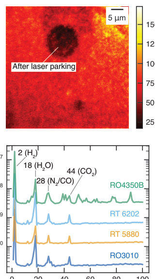
<figcaption class="paper-figure-caption"><b>Fig 5.</b> FIG. 5. (a) A confocal scan of the diamond surface after high power microwave through a PCB made of RO4350B. The dark regions show the increased background surface PL can be quenched by scanning the green laser. (b) Averaged residual gas analyzer (RGA) mass spectra during continuous microwave operation for 2 hours showing outgassing partial pressures from different PCB substrate materials: blue: RO3010, yellow: RT/duroid 5880, light blue: RT/duroid 6202, green: RO4350B. The top three curves have been vertically shifted for clarity.</figcaption>
</figure>
</div>

<p><strong>Summary.</strong> The authors designed and utilized an integrated Ultrahigh Vacuum cluster tool to study Nitrogen-Vacancy centers in diamond. This platform uniquely combines surface science tools like XPS/LEED with cryogenic NV spin measurement capabilities, allowing researchers to directly correlate controlled surface chemistry changes with the resulting quantum coherence of the defect center.</p>
<p><strong>Why it may be interesting.</strong> This work provides a highly sophisticated experimental realization of controlling solid-state quantum emitters by engineering their immediate physical environment at the atomic scale. The ability to correlate chemical state (XPS) directly with quantum coherence ($T_2$) is crucial for building robust quantum memories and sensors.</p>
<details>
<summary>Detailed structure</summary>
<p><strong>Main problem.</strong> The primary challenge is correlating diamond surface chemistry/structure with the spin and charge properties of shallow Nitrogen-Vacancy (NV) centers, as surface contaminants cause decoherence and instability.</p>
<p><strong>Main result.</strong> An integrated UHV cluster tool was developed that allows for direct, in situ correlation between controlled diamond surface modifications and measurable NV spin dynamics, establishing a pathway for reproducible quantum sensing.</p>
<p><strong>Method.</strong> The authors utilized an ultrahigh vacuum (UHV) cluster tool integrating separate chambers for surface science (XPS, LEED, annealing) and cryogenic confocal microscopy for single-NV measurements.</p>
<p><strong>Model / system.</strong> The system is a complex experimental platform comprising three interconnected modules: a load-lock, a surface science chamber capable of thermal/gas treatment, and a cryogenic microscope chamber. This setup allows atomic-scale control over the diamond surface while simultaneously performing quantum optical measurements on NV centers.</p>
<p><strong>Key observables.</strong> NV spin coherence times ($T_1$, $T_2$), charge state stability, background Photoluminescence (PL) intensity, XPS core-level spectra ($ ext{C}1s$, $    ext{O}1s$), and LEED patterns.</p>
<p><strong>Important parameters / regimes.</strong> Ultrahigh vacuum base pressures ($\sim 5 	imes 10^{-10}$ mbar); cryogenic temperatures (down to $4	ext{ K}$); annealing temperatures up to $>1000^\circ	ext{C}$; magnetic field alignment precision better than $0.5^\circ$.</p>
<p><strong>Assumptions / limitations.</strong> The system's ability to maintain vacuum integrity while performing complex mechanical and optical manipulations is assumed; the observed PL changes are attributed to surface charging effects mediated by adsorbates.</p>
<p><strong>Figures summary.</strong> Figures detail the schematic layout of the three-module UHV cluster tool, the optical setup for confocal microscopy, XPS/LEED results showing surface termination, and PL maps illustrating background signal changes upon annealing or exposure.</p>
<p><strong>Paper structure.</strong> The paper describes the necessity of integrating surface science (XPS/LEED) with quantum measurement (NV spectroscopy) under UHV. It details the custom hardware design (external scanning optics, specialized sample mount) to achieve this integration, followed by presenting results correlating surface cleanliness metrics with improved NV spin coherence.</p>
</details>
<details>
<summary>Abstract</summary>
<p>We present a custom-designed ultrahigh vacuum (UHV) cluster tool developed for studying shallow nitrogen-vacancy (NV) centers in diamond, enabling in situ diamond surface preparation, characterization, and single NV center dynamics measurements within a single connected platform. The system combines a surface science chamber for controlled surface modification and analysis with a cryogenic confocal microscope chamber dedicated to NV spin and optical measurements. This integrated approach enables a direct correlation between diamond surface chemistry and the resulting NV spin and charge properties. The instrument provides a versatile platform for systematic studies of surface-induced decoherence mechanisms and charge dynamics for shallow NV centers, and establishes a pathway toward reproducible surface engineering for quantum sensing applications.</p>
</details>
<p><sub><a href="#top">↑ back to top</a></sub></p>

<p><a id="paper-2606.14196"></a></p>
<h3 id="ferromagnetic-order-of-reduced-magnetic-moments-in-a-frustrated-sawtooth-chain-of-the-magnetic-semiconductor-znybmath237mathsmath238math"><a href="http://arxiv.org/abs/2606.14196v1">Ferromagnetic Order of Reduced Magnetic Moments in a Frustrated Sawtooth Chain of the Magnetic Semiconductor ZnYb$_2$S$_4$</a></h3>
<p><strong>Authors:</strong> Shinji Okada, Hiroto Suzuki, Nonoka Higa, Yasuyuki Shimura, Takanori Taniguchi, Takahiro Onimaru<br>
<strong>Type:</strong> experiment · <strong>Category:</strong> strongly correlated electrons · <strong>PDF:</strong> <a href="https://arxiv.org/pdf/2606.14196v1">https://arxiv.org/pdf/2606.14196v1</a><br>
<strong>Analysis basis:</strong> full PDF text, analyzed in chunks
<strong>Topic relevance:</strong> 🔥 <code>analog quantum simulation</code> <strong>4/5</strong> · <code>exotic spin models in light-matter</code> <strong>3/5</strong> · <code>Frenkel-Kontorova</code> <strong>2/5</strong></p>
<div class="figure-strip-hint">↔ Scroll figures horizontally</div>
<div class="paper-figures-scroll">
<figure class="paper-figure-card">
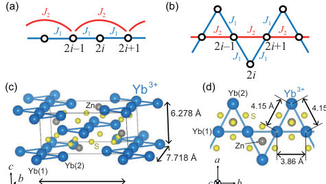
<figcaption class="paper-figure-caption"><b>Fig 1.</b> FIG. 1. (Color online) (a) One-dimensional spin chain with nearest- and next-nearest-neighbor exchange interactions, J1 (blue) and J2 (red). Note that J2 acts on every other site. (b) A sawtooth spin chain with J1 and J2 equivalent to the one-dimensional model. (c) Orthorhombic crystal structure of ZnYb2S4 with the space group of Pnma. There are two Yb3+ sites, which are labeled Yb(1) at the 4a site (¯1) and Yb(2) at the 4c site (m). (d) The Yb3+ ions of Yb(1) and Yb(2) form a sawtooth chain along the b-axis.</figcaption>
</figure>
<figure class="paper-figure-card">
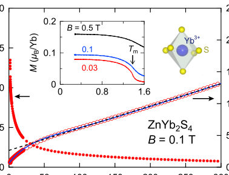
<figcaption class="paper-figure-caption"><b>Fig 2.</b> FIG. 2. (Color online) Temperature dependence of the magnetic susceptibility M(T )/B of ZnYb2S4 measured in B = 0.1 T (left-hand scale), and the inverse susceptibility B/M (right-hand scale). The broken line indicates a Curie– Weiss fit, and the solid (blue) line is a calculation considering the CEF effect for a Yb3+ ion. The inset presents the temper- ature dependence of the magnetization in B = 0.03, 0.1, and 0.5 T. Tm denotes the magnetic ordering temperature. The right inset shows the Yb(1) site encapsulated in a slightly dis- torted S octahedron.</figcaption>
</figure>
<figure class="paper-figure-card">
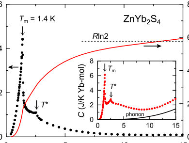
<figcaption class="paper-figure-caption"><b>Fig 3.</b> FIG. 3. (Color online) Temperature dependence of the mag- netic specific heat divided by temperature, Cm/T (left-hand scale), and the magnetic entropy, Sm (right-hand scale), of ZnYb2S4. Tm denotes the magnetic ordering temperature, and T ∗indicates an extrinsic anomaly due to an impurity phase. The inset shows the temperature dependence of the specific heat, C(T ). The solid line represents the phonon contribution estimated using a Debye model. See the text in detail.</figcaption>
</figure>
<figure class="paper-figure-card">
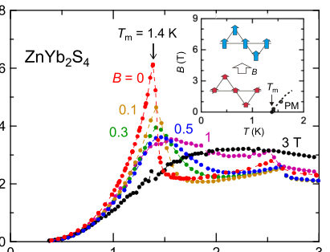
<figcaption class="paper-figure-caption"><b>Fig 4.</b> FIG. 4. (Color online) Temperature dependence of the spe- cific heat C of ZnYb2S4 in B = 0, 0.1, 0.3, 0.5, 1, and 3 T. The inset shows the B–T phase diagram. PM denotes the para- magnetic phase, and the broken line indicates the crossover. The illustration indicates that the reduced Yb moments (red arrows) on the sawtooth chain are developed (blue arrows) due to release of the magnetic frustration with the applica- tion of magnetic fields.</figcaption>
</figure>
<figure class="paper-figure-card">
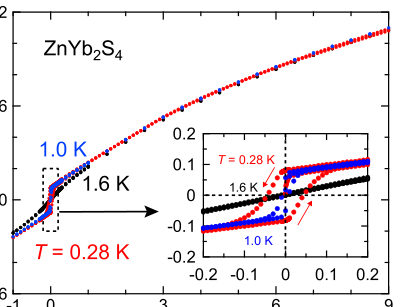
<figcaption class="paper-figure-caption"><b>Fig 5.</b> FIG. 5. (Color online) Isothermal magnetization of ZnYb2S4 at T = 0.28 (red), 1.0 (blue), and 1.6 K (black). The inset shows the data expanded for |B| ≤0.2 T. The arrows indicate the directions in which the magnetic fields change.</figcaption>
</figure>
</div>

<p><strong>Summary.</strong> The study investigates $   ext{ZnYb}_2 ext{S}_4$, a material featuring Yb ions arranged in a frustrated sawtooth chain. Through detailed measurements of specific heat and magnetization, the authors demonstrate that magnetic frustration suppresses the expected long-range antiferromagnetic order below $T_m = 1.4 	ext{ K}$. The results suggest the ground state features ferromagnetically aligned but significantly reduced moments.</p>
<p><strong>Why it may be interesting.</strong> This work provides an excellent example of how geometric frustration in a low-dimensional quantum magnet can suppress expected long-range order, leading to novel ground states that are sensitive to external fields.</p>
<details>
<summary>Detailed structure</summary>
<p><strong>Main problem.</strong> Investigating how magnetic frustration within a sawtooth chain structure affects the ground state magnetic order of $ ext{Yb}^{3+}$ moments in the semiconductor $    ext{ZnYb}_2 ext{S}_4$.</p>
<p><strong>Main result.</strong> The system exhibits evidence of magnetic frustration, leading to reduced spontaneous magnetization despite underlying antiferromagnetic correlations; the ground state is characterized by ferromagnetically aligned but suppressed Yb moments.</p>
<p><strong>Method.</strong> A combination of bulk measurements including specific heat ($C(T)$), isothermal magnetization ($M(B)$), and powder neutron diffraction were employed.</p>
<p><strong>Model / system.</strong> The physical system is the orthorhombic semiconductor $ ext{ZnYb}_2 ext{S}_4$, where $  ext{Yb}^{3+}$ ions form a sawtooth spin chain along the $b$-axis, modeled by competing nearest- and next-nearest-neighbor exchange interactions.</p>
<p><strong>Key observables.</strong> Specific heat peak at $T_m = 1.4 	ext{ K}$, magnetic entropy release ($27\%$ of $R\ln2$ at $T_m$), hysteresis in $M(B)$, and absence of superlattice reflections in neutron diffraction.</p>
<p><strong>Important parameters / regimes.</strong> $T_m = 1.4 	ext{ K}$ (transition temperature); $ heta_p &lt; 0$ (indicating AFM interactions); spontaneous magnetization $\approx 0.1 \mu_B/	ext{Yb}$.</p>
<p><strong>Assumptions / limitations.</strong> The magnetic behavior is governed by the effective spin-1/2 Kramers doublet ground state derived from Crystal Electric Field theory.</p>
<p><strong>Figures summary.</strong> Figures show $C(T)$ peaks, $M(B)$ hysteresis loops, and neutron diffraction patterns confirming the nature of the magnetic ordering below $T_m$.</p>
<p><strong>Paper structure.</strong> The paper first establishes the theoretical framework using a sawtooth chain Hamiltonian and CEF analysis. It then presents experimental results from specific heat and magnetization measurements to identify the transition temperature ($T_m$) and quantify frustration via entropy release. Finally, neutron diffraction confirms the nature of the magnetic order.</p>
</details>
<details>
<summary>Abstract</summary>
<p>In a sawtooth spin chain, competing nearest- and next-nearest-neighbor interactions suppress long-range order, yielding novel quantum states such as a spin-dimer singlet, 1/2 magnetization plateau, and spin contraction. Here, we investigate the magnetic properties of the orthorhombic semiconductor ZnYb$_2$S$_4$, in which Yb$^{3+}$ ions with an effective spin-1/2 form a sawtooth chain along the $b$-axis. The specific heat exhibits a sharp peak at ${T}_{\rm m}$ $=$ 1.4 K, at which the magnetic entropy $S_{\rm m}$ reaches only 27% of $R$ln2. This reduced $S_{\rm m}$ at $T_{\rm m}$ indicates the entropy release of the ground state doublet of Yb$^{3+}$ even for $T$ $>$ $T_{\rm m}$. The isothermal magnetization $M(B)$ at 0.28 K exhibits hysteresis for $\left|B\right| \leq 0.2$ T and increases monotonically for $B > 0.2$ T. The spontaneous magnetization is only 0.1 ${\it μ}_{\rm B}$$/$Yb, an order of magnitude smaller than that expected for the ground state doublet of Yb$^{3+}$. Moreover, in powder neutron diffraction measurements, no superlattice reflections due to antiferromagnetic order are observed for $T$ $<$ $T_{\rm m}$. Therefore, in the ground state, the Yb moments are ferromagnetically aligned, but their amplitude is reduced by magnetic frustration in the sawtooth Yb chain.</p>
</details>
<p><sub><a href="#top">↑ back to top</a></sub></p>

<p><a id="paper-2606.14338"></a></p>
<h3 id="mass-imbalanced-two-dimensional-bose-fermi-mixtures-with-boson-fermion-pairing"><a href="http://arxiv.org/abs/2606.14338v1">Mass-imbalanced two-dimensional Bose-Fermi mixtures with boson-fermion pairing</a></h3>
<p><strong>Authors:</strong> Cristiano Luigi Kosman Chiarappa, Pietro Bovini, Pierbiagio Pieri<br>
<strong>Type:</strong> theory · <strong>Category:</strong> quantum gases · <strong>PDF:</strong> <a href="https://arxiv.org/pdf/2606.14338v1">https://arxiv.org/pdf/2606.14338v1</a><br>
<strong>Analysis basis:</strong> full PDF text, analyzed in chunks
<strong>Topic relevance:</strong> 🔥 <code>analog quantum simulation</code> <strong>4/5</strong> · <code>Keldysh / 2PI / non-Gaussian methods</code> <strong>3/5</strong> · <code>methods for driven-dissipative</code> <strong>1/5</strong> · <code>non-equilibrium dynamics</code> <strong>1/5</strong></p>
<div class="figure-strip-hint">↔ Scroll figures horizontally</div>
<div class="paper-figures-scroll">
<figure class="paper-figure-card">
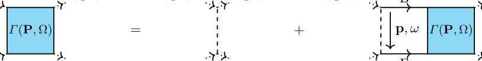
<figcaption class="paper-figure-caption"><b>Fig 1.</b> FIG. 1. Feynman diagrams for the particle-particle ladder Γ(P, Ω), corresponding to the T-matrix in the normal phase. Full lines correspond to bare bosonic (B) and fermionic (F) Green’s functions, dashed lines correspond to bare BF interactions, and dotted lines with arrows indicate the external momentum flow. (P, Ω) is the center of mass (2+1)-momentum (P, Ω) = (p1+p2, ω1+ω2) while (p, ω) is the exchanged (2+1)-momentum.</figcaption>
</figure>
<figure class="paper-figure-card">
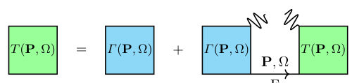
<figcaption class="paper-figure-caption"><b>Fig 2.</b> FIG. 2. Feynman’s diagrams for the many-body T-matrix in the condensed phase T(P, Ω). Wiggly lines correspond to condensed boson insertions and contribute with a factor of √n0 each, where n0 is the condensate density.</figcaption>
</figure>
<figure class="paper-figure-card">
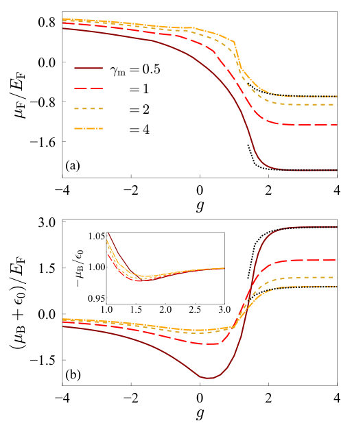
<figcaption class="paper-figure-caption"><b>Fig 3.</b> FIG. 4. (a): Fermion chemical potential µF in units of EF. (b): Boson chemical potential µB (shifted by the binding en- ergy ϵ0), in units of EF, as a function of the BF coupling g, for several values of mass ratio γm, in the case x = 1. Inset: ratio between µB and its leading strong-coupling limit −ϵ0. Black dotted lines: strong-coupling benchmarks (reported for clarity for γm = 0.5, 4 only).</figcaption>
</figure>
<figure class="paper-figure-card">
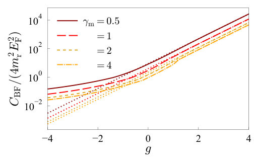
<figcaption class="paper-figure-caption"><b>Fig 4.</b> FIG. 5. Dimensionless parameter CBF/(4m2 rE2 F), as a func- tion of BF coupling g, for different values of the mass ratio γm in the case x = 1. Dotted lines: asymptotic behavior given by (x ϵ0 (γm + 1)/γm) /EF.</figcaption>
</figure>
<figure class="paper-figure-card">
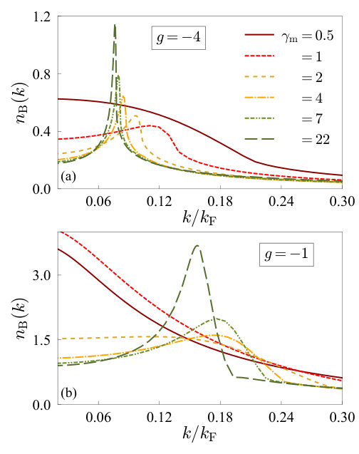
<figcaption class="paper-figure-caption"><b>Fig 5.</b> FIG. 6. Boson momentum distribution nB(k) as a function of k/kF, for the boson concentration x = 1 and BF couplings g = −4 (a) and g = −1 (b). Several values of mass ratio γm are reported.</figcaption>
</figure>
</div>

<p><strong>Summary.</strong> This paper theoretically investigates mass-imbalanced two-dimensional Bose-Fermi mixtures interacting via tunable attraction. Using a diagrammatic T-matrix approach, the authors calculate key thermodynamic properties and predict that mass imbalance introduces qualitative changes in the boson momentum distribution. These findings offer new experimental signatures for probing strongly correlated quantum gases.</p>
<p><strong>Why it may be interesting.</strong> This work provides advanced theoretical tools (T-matrix formalism) to predict novel observable signatures (finite momentum peaks) in ultracold quantum gas mixtures, which is highly relevant for experimental realization using modern cold atom or semiconductor platforms.</p>
<details>
<summary>Detailed structure</summary>
<p><strong>Main problem.</strong> The study analyzes mass-imbalanced two-dimensional Bose-Fermi (BF) mixtures with tunable boson-fermion attraction at zero temperature.</p>
<p><strong>Main result.</strong> Mass imbalance acts as a new control parameter that qualitatively modifies the bosonic momentum distribution, potentially allowing for the observation of a peak at finite momentum.</p>
<p><strong>Method.</strong> The analysis employs a diagrammatic T-matrix approach and utilizes weak-coupling perturbative expansions to calculate thermodynamic quantities.</p>
<p><strong>Model / system.</strong> The system is modeled as a 2D homogeneous mixture of spinless bosons and fermions, governed by an effective Hamiltonian including BF attraction and optional BB repulsion. The study extends theoretical treatments from mass-balanced to mass-imbalanced cases.</p>
<p><strong>Key observables.</strong> Chemical potentials ($\mu_B, \mu_F$), boson momentum distribution function ($n_B(k)$), condensate density, and Tan's contact parameter ($C_{BF}$).</p>
<p><strong>Important parameters / regimes.</strong> Mass ratio ($\gamma_m = m_B/m_F$), boson concentration parameter ($x = n_B/n_F$), and the effective coupling strength ($g$).</p>
<p><strong>Assumptions / limitations.</strong> The analysis assumes a dilute, homogeneous mixture at zero temperature ($T=0$) and relies on diagrammatic approximations (T-matrix formalism).</p>
<p><strong>Figures summary.</strong> Figures illustrate Feynman diagrams for T-matrices and self-energies; specific plots show the dependence of chemical potentials ($\mu_F, \mu_B$) and the bosonic momentum distribution $n_B(k)$ on mass ratio and coupling strength.</p>
<p><strong>Paper structure.</strong> The paper systematically develops the theoretical framework by first establishing the T-matrix formalism in the normal phase, then calculating self-energies for both species, deriving perturbative expansions for chemical potentials ($\mu_F, \mu_B$), and finally analyzing the resulting momentum distributions and condensate fractions as functions of mass imbalance.</p>
</details>
<details>
<summary>Abstract</summary>
<p>We analyze a two-dimensional Bose-Fermi mixture at zero temperature in the presence of a tunable Bose-Fermi attraction. We adopt a diagrammatic T-matrix approach and study the behavior of several thermodynamic quantities for the two species as functions of density, mass ratio, and coupling strength. These include the chemical potentials, the boson momentum distribution function, the condensate density, and Tan's contact parameter. We analytically demonstrate that the present T-matrix formalism recovers the correct second-order perturbative expansion of the chemical potentials in the weak-coupling regime, and test it numerically. The near-universal behavior already found in prior work for the mass-balanced case is confirmed for different masses and becomes even more accurate when the boson mass is large. The mass imbalance emerges as an additional control parameter that qualitatively affects the bosonic momentum distribution. In particular, we found that it can be used to allow for the experimental observation of a peculiar peak in the boson momentum distribution at finite momentum.</p>
</details>
<p><sub><a href="#top">↑ back to top</a></sub></p>

<p><a id="paper-2606.14135"></a></p>
<h3 id="fermi-gas-of-polar-molecules-in-the-pauli-blocked-regime"><a href="http://arxiv.org/abs/2606.14135v1">Fermi gas of polar molecules in the Pauli-blocked regime</a></h3>
<p><strong>Authors:</strong> Junyu Lin, Annette N. Carroll, Phillip Martin, Calder Miller, Reuben R. W. Wang, Kevin Xu, John L. Bohn, Tim de Jongh, Jun Ye<br>
<strong>Type:</strong> both · <strong>Category:</strong> quantum gases · <strong>PDF:</strong> <a href="https://arxiv.org/pdf/2606.14135v1">https://arxiv.org/pdf/2606.14135v1</a><br>
<strong>Analysis basis:</strong> full PDF text, analyzed in chunks
<strong>Topic relevance:</strong> 🔥 <code>analog quantum simulation</code> <strong>4/5</strong> · <code>Keldysh / 2PI / non-Gaussian methods</code> <strong>1/5</strong> · <code>correlated / nonlocal dissipation</code> <strong>1/5</strong> · <code>driven-dissipative phase transition</code> <strong>1/5</strong> · <code>methods for driven-dissipative</code> <strong>1/5</strong></p>
<div class="figure-strip-hint">↔ Scroll figures horizontally</div>
<div class="paper-figures-scroll">
<figure class="paper-figure-card">
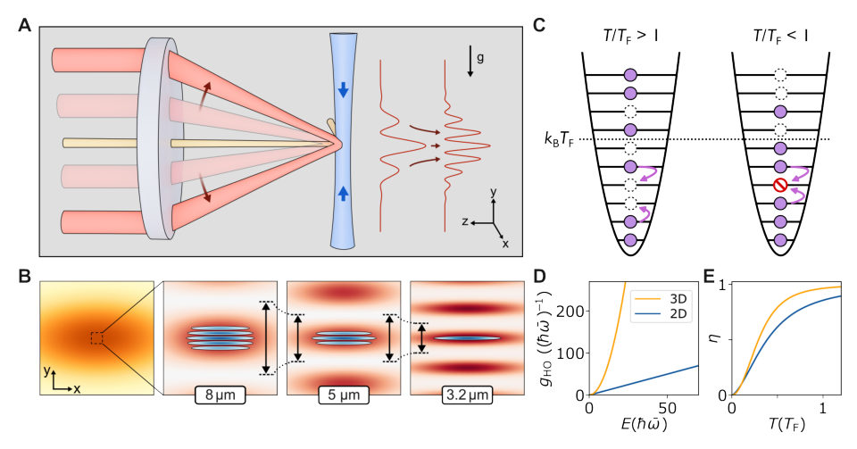
<figcaption class="paper-figure-caption"><b>Fig 1.</b> Fig. 1: Experimental setup and elastic collisions under Pauli blockade. (A) Sketch of the optical trap configurations. The xODT (yellow) and VL (blue) provide the trapping potential for molecules in 3D and quasi-2D, respectively. The AL (red) serves to compress the distribution for the atomic mixture along the y-direction before turning on the VL. The spatial period of the AL intensity distribution (shown as red curves on the right) is adjustable by controlling the intersection angle of AL beams (light red and red) after passing through the focus lens. (B) By varying the final spacing of the AL (red) to 8 µm, 5 µm, or 3.2 µm, the atomic mixture – initially trapped in the xODT (yellow) – is...</figcaption>
</figure>
<figure class="paper-figure-card">
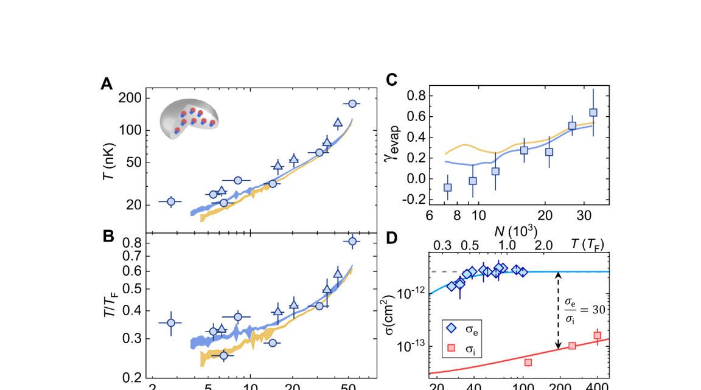
<figcaption class="paper-figure-caption"><b>Fig 2.</b> Fig. 2: Evaporative cooling and collisional cross section measurements of KRb in 3D. The cooling trajectory for KRb in 3D is shown as T vs N (A) and T/TF vs N (B). The circles are from Fermi-Dirac fits while the triangles are from density fluctuation measurements. Error bars are 1 standard error (SE) from Fermi-Dirac fits for the circles and 1 SE of the mean for the triangles (49). The blue curves are obtained from Monte Carlo simulations of the full evaporation sequence. Yellow curves are obtained from simulations which ignore the Pauli suppression of elastic scattering. The half width of the band represents 1 SE from Fermi-Dirac fits. (C) Evaporative cooling efficiency 𝛾/012 as a function...</figcaption>
</figure>
<figure class="paper-figure-card">
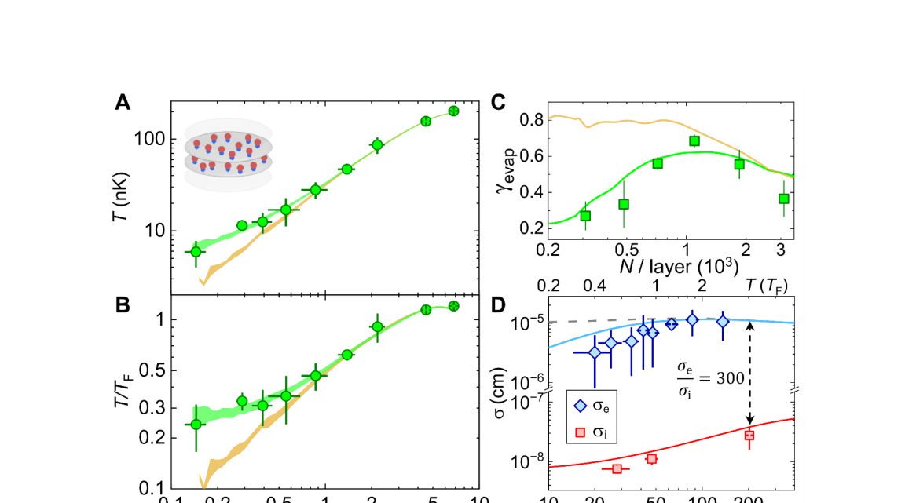
<figcaption class="paper-figure-caption"><b>Fig 3.</b> Fig. 3: Evaporative cooling and collisional cross section measurements of KRb in quasi-2D. The cooling trajectory for KRb in quasi-2D is shown as T vs N (A) and T/TF vs N (B). Data points show our measurement results, obtained from Fermi-Dirac fits to the molecular density profiles. Error bars represent 1 SE of the mean over four experimental repetitions. The green curves are from a Monte Carlo simulation which includes effects from Pauli suppression, laser-induced heating. Yellow curves are from a simulation which excludes Pauli suppression of elastic collisions. The half width of the band represents 1 SE from Fermi-Dirac fits. (C) Evaporative cooling efficiency 𝛾/012 vs N in quasi-2D....</figcaption>
</figure>
<figure class="paper-figure-card">
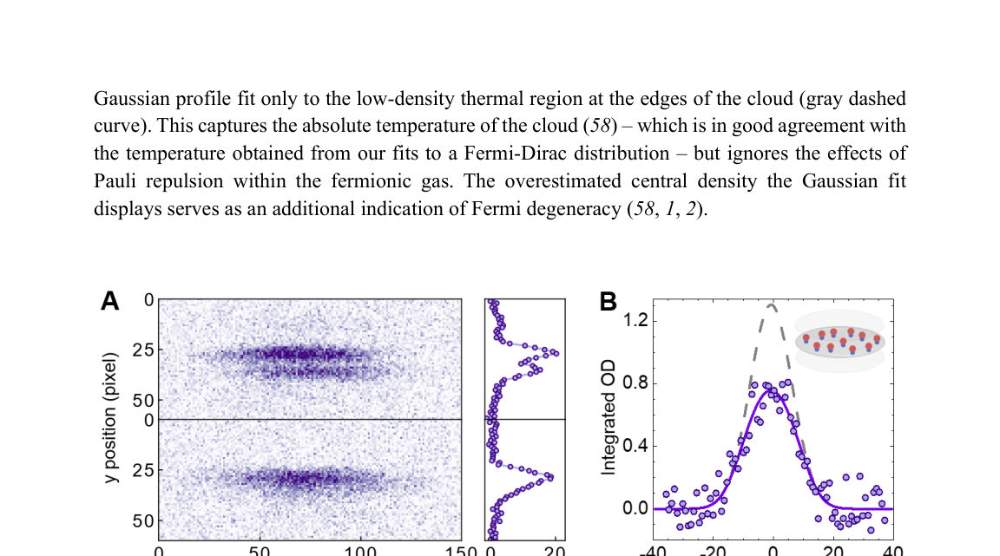
<figcaption class="paper-figure-caption"><b>Fig 4.</b> Fig.4: Quasi-2D mono- and bilayer samples of ultracold polar KRb. (A) Absorption images (left) and integrated optical density (OD) along the 𝑧-direction (right) for bilayer (upper panels) and monolayer (upper panels) configurations after matter-wave magnification. (B) Integrated OD of a degenerate monolayer KRb cloud (data points). The purple curve shows a fitted Fermi-Dirac distribution, giving 𝑇/𝑇! = 0.44(14). The gray dashed curve is obtained from a Gaussian fit to the outer wings of the sample. Discussion and outlook In this work, we have brought polar molecules into a new regime where collisions are manifestly dictated by Fermi statistics by producing degenerate Fermi gases of polar...</figcaption>
</figure>
</div>

<p><strong>Summary.</strong> The study reports on achieving deep degeneracy in fermionic polar molecular gases in both 3D and quasi-2D traps. By measuring density fluctuations and analyzing collision rates, the authors confirm that the Pauli exclusion principle imposes a fundamental limit on how cold these quantum systems can be cooled. This work is crucial for designing future experiments aiming to explore exotic many-body physics beyond simple thermal equilibrium.</p>
<p><strong>Why it may be interesting.</strong> This work provides crucial experimental benchmarks for understanding how quantum statistics constrain evaporative cooling in dipolar systems, which is vital for realizing highly correlated quantum phases like superfluidity or novel magnetic states.</p>
<details>
<summary>Detailed structure</summary>
<p><strong>Main problem.</strong> The study investigates achieving deep degeneracy in quantum gases of polar molecules while quantifying the fundamental limitations imposed by the Pauli exclusion principle during evaporative cooling.</p>
<p><strong>Main result.</strong> The authors successfully produced degenerate Fermi gases in both 3D and quasi-2D geometries, confirming that Pauli blockade significantly limits the lowest achievable temperatures, especially in lower dimensions.</p>
<p><strong>Method.</strong> The research combines experimental measurements of density fluctuations and cross sections with advanced theoretical modeling (Monte Carlo simulations and solving radial Schrödinger equations) to quantify these quantum statistical effects.</p>
<p><strong>Model / system.</strong> The system is a Fermi gas of fermionic polar molecules ($   ext{KRb}$) trapped in harmonic or quasi-2D optical potentials. Interactions are dominated by engineered repulsive dipole-dipole collisions, allowing for precise control over scattering cross sections.</p>
<p><strong>Key observables.</strong> Reduced temperature ($T/T_F$), Pauli suppression factor ($\eta$), elastic and inelastic collision cross sections ($\sigma_{el}, \sigma_{in}$), and density fluctuations ($   ext{Var } N/N_{ ext{;}}$).</p>
<p><strong>Important parameters / regimes.</strong> The primary limiting factors are the Pauli exclusion principle, which restricts scattering rates, and one-body heating from the trap potential.</p>
<p><strong>Assumptions / limitations.</strong> Key assumptions include using the Local Density Approximation (LDA) for thermometry and assuming adiabaticity during electric field ramping for cooling analysis.</p>
<p><strong>Figures summary.</strong> Figures illustrate evaporative cooling trajectories ($T$ vs $N$, $T/T_F$ vs $N$) comparing experimental data to simulations incorporating Pauli suppression. Other figures detail density fluctuation measurements and the temperature dependence of cross sections derived from thermalization rate analyses.</p>
<p><strong>Paper structure.</strong> The paper progresses by first establishing the platform (polar molecules in 3D/2D), then detailing multiple diagnostic techniques (density fluctuations, CDT) to measure degeneracy and interaction rates. The core argument builds by comparing cooling trajectories across dimensions, culminating in a quantitative assessment of Pauli blockade as the ultimate limit.</p>
</details>
<details>
<summary>Abstract</summary>
<p>Quantum gases of polar molecules have recently emerged as a powerful platform for exploring exotic many-body dynamics and correlated quantum behavior. To achieve the full potential of this platform, the production of deeply degenerate quantum gases of molecules in arbitrary confinement geometries is necessary. Here, we successfully evaporate fermionic KRb molecules in both 3D and quasi-2D geometries to well below their Fermi temperatures utilizing dipolar collisions. As we evaporate deeper into degeneracy in both geometries, we enter the Pauli-blocked regime with polar molecules, which we independently confirm for the first time by measuring the Pauli suppression of elastic collisions. Moreover, the Pauli suppression of collisions contributes to the limitation of our final molecular temperature to about 25% of the Fermi temperature in both geometries, particularly limiting quasi-2D evaporation where the Pauli blockade drastically reduces an otherwise large elastic to inelastic scattering ratio. This work demonstrates the production of degenerate Fermi gases of polar molecules both in a 3D harmonic trap and in mono- and bi-layer 2D configurations. Further, our work explores the fundamental limits on evaporation of molecular Fermi gases set by the Pauli-exclusion principle, which could be overcome in the future by introducing distinguishable scattering partners.</p>
</details>
<p><sub><a href="#top">↑ back to top</a></sub></p>

<p><a id="paper-2606.14698"></a></p>
<h3 id="resolving-the-edge-of-a-quantum-pyramid"><a href="http://arxiv.org/abs/2606.14698v1">Resolving the Edge of a Quantum Pyramid</a></h3>
<p><strong>Authors:</strong> Alvan Arulandu<br>
<strong>Type:</strong> theory · <strong>Category:</strong> quantum information and computing · <strong>PDF:</strong> <a href="https://arxiv.org/pdf/2606.14698v1">https://arxiv.org/pdf/2606.14698v1</a><br>
<strong>Analysis basis:</strong> full PDF text, analyzed in chunks
<strong>Topic relevance:</strong> 🔥 <code>entanglement &amp; information structure</code> <strong>4/5</strong> · <code>quantum measurements</code> <strong>3/5</strong> · <code>measurement-induced transitions</code> <strong>1/5</strong></p>
<div class="figure-strip-hint">↔ Scroll figures horizontally</div>
<div class="paper-figures-scroll">
<figure class="paper-figure-card">
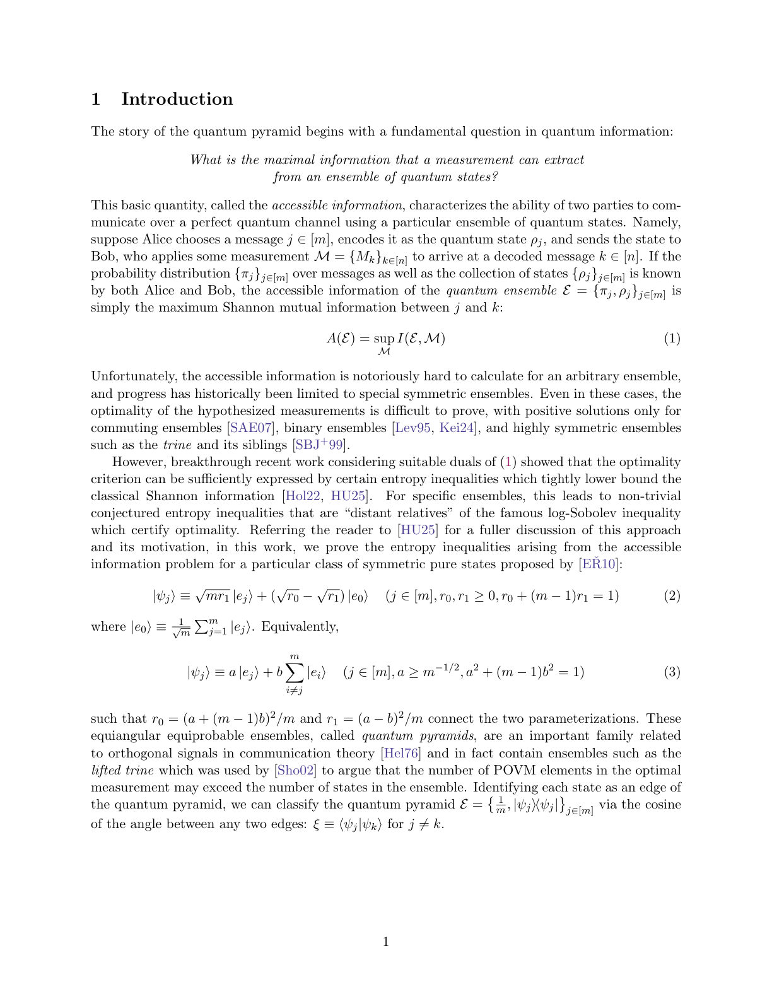
<figcaption class="paper-figure-caption"><b>Fig 1.</b> Low-resolution page preview, page 2</figcaption>
</figure>
<figure class="paper-figure-card">
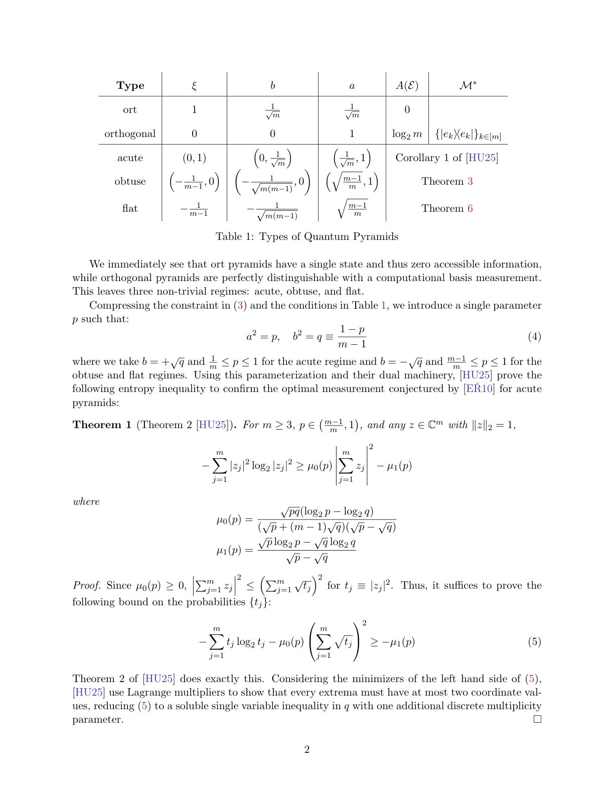
<figcaption class="paper-figure-caption"><b>Fig 2.</b> Low-resolution page preview, page 3</figcaption>
</figure>
<figure class="paper-figure-card">
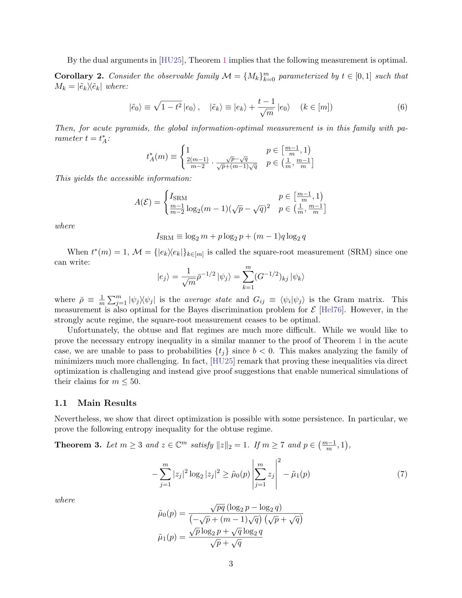
<figcaption class="paper-figure-caption"><b>Fig 3.</b> Low-resolution page preview, page 4</figcaption>
</figure>
<figure class="paper-figure-card">
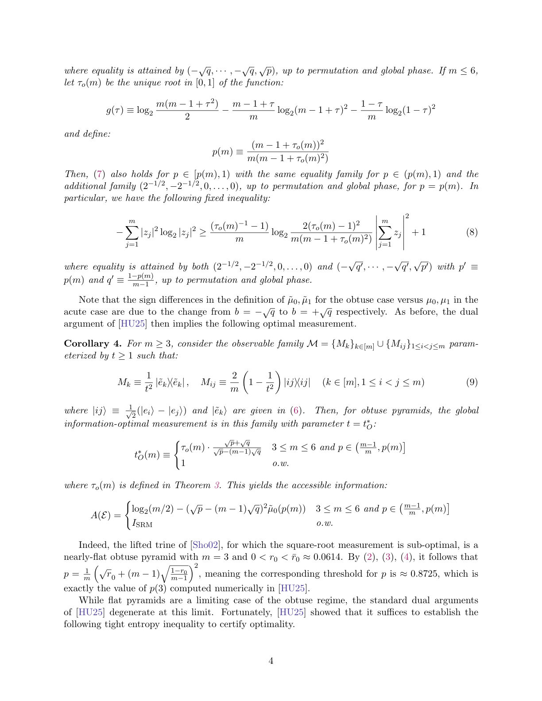
<figcaption class="paper-figure-caption"><b>Fig 4.</b> Low-resolution page preview, page 5</figcaption>
</figure>
<figure class="paper-figure-card">
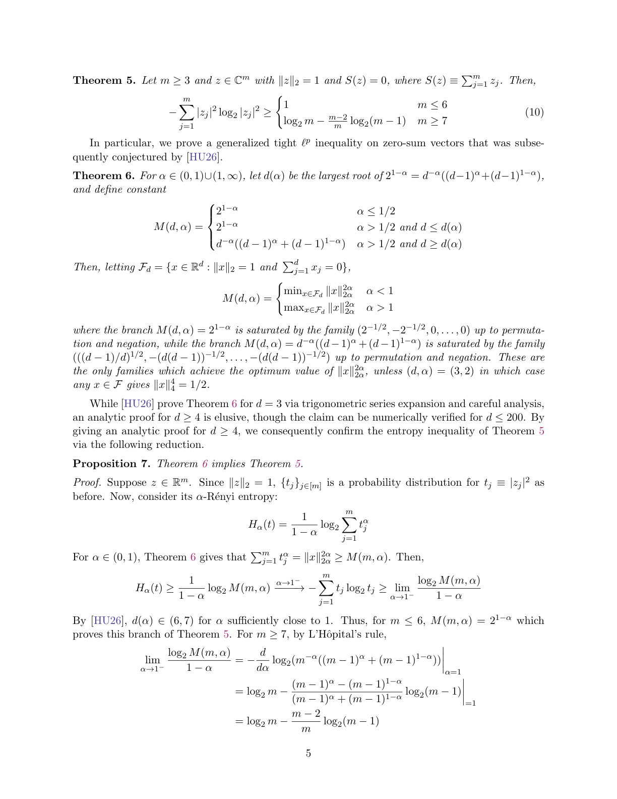
<figcaption class="paper-figure-caption"><b>Fig 5.</b> Low-resolution page preview, page 6</figcaption>
</figure>
</div>

<p><strong>Summary.</strong> This paper resolves the quantum pyramids conjecture by rigorously proving the optimal measurement strategy for specific ensembles of pure quantum states. It achieves this by establishing necessary entropy inequalities that certify optimality across different geometric regimes (obtuse and flat). The methodology is highly technical, combining advanced optimization theory with algebraic analysis to determine fundamental information-theoretic bounds.</p>
<p><strong>Why it may be interesting.</strong> This work provides deep mathematical tools—such as advanced inequality proofs and structural analysis of optimizers—that are highly relevant to understanding fundamental limits in quantum information theory, particularly those related to measurement capacity.</p>
<details>
<summary>Detailed structure</summary>
<p><strong>Main problem.</strong> The paper resolves the quantum pyramids conjecture by determining the globally information-optimal measurement for an ensemble of equiangular equiprobable pure states.</p>
<p><strong>Main result.</strong> Optimal measurements are confirmed by proving necessary entropy inequalities for both obtuse and flat pyramid configurations, establishing bounds on accessible information $A(E)$.</p>
<p><strong>Method.</strong> The proof combines techniques from convex optimization, analyzing structural properties of minimizers using Lagrange multipliers, and applying specialized methods like the 'equal variables method' to establish tight $\ell^p$ inequalities.</p>
<p><strong>Model / system.</strong> The system models quantum information processing via an ensemble $E = \{\pi_j, 
ho_j\}_{j=1}^m$ of pure states forming a geometric structure (the 'quantum pyramid') defined by the angles between them. The core mathematical object is the accessible information $A(E)$.</p>
<p><strong>Key observables.</strong> Accessible information $A(E)$; entropy inequalities; $\ell^p$ norms for zero-sum vectors.</p>
<p><strong>Important parameters / regimes.</strong> The number of states ($m$), and geometric parameters defining the pyramid (acute, obtuse, flat regimes). The exponent $\alpha$ is crucial in the flat regime analysis.</p>
<p><strong>Assumptions / limitations.</strong> The analysis relies on reducing complex optimization problems to real-variable minimization problems and systematically eliminating candidate minimizers with three or more distinct coordinate values.</p>
<p><strong>Figures summary.</strong> Not specified (Notes reference tables summarizing pyramid types and associated theorems).</p>
<p><strong>Paper structure.</strong> The paper proceeds by analyzing the problem in different geometric regimes (acute, obtuse, flat), proving necessary entropy inequalities for each case. Key steps involve rigorous optimization proofs: first eliminating complex families of minimizers, then establishing tight $\ell^p$ bounds via specialized methods.</p>
</details>
<details>
<summary>Abstract</summary>
<p>Standing on the shoulders of giants, we resolve the quantum pyramids conjecture, confirming the globally information-optimal measurement for an ensemble of equiangular equiprobable pure states, as conjectured by Englert and Řeháček (arXiv:0905.0510). We do so by proving the remaining entropy inequalities of Holevo and Utkin (arXiv:2506.06700), which certify optimality for obtuse and flat pyramids. For obtuse pyramids, our key contribution is a rigorous proof that local minimizers of the corresponding entropy inequality cannot have three distinct coordinate values. We show that eliminating this family can be reduced to a neat algebraic reciprocal inequality relating branches of the Lambert $W$ function, which may be of independent interest. For flat pyramids, we prove a tight $\ell^p$ inequality for zero-sum vectors that was recently conjectured, proved analytically in dimension $d=3$, and computationally verified for $d\leq 200$ by Holevo and Utkin (arXiv:2603.24017). We prove this bound for all $d\geq 2$ via a technique in symmetric inequalities known as the equal variables method.</p>
</details>
<p><sub><a href="#top">↑ back to top</a></sub></p>

<p><a id="paper-2606.14140"></a></p>
<h3 id="quantum-entanglement-of-bethe-states"><a href="http://arxiv.org/abs/2606.14140v1">Quantum Entanglement of Bethe States</a></h3>
<p><strong>Authors:</strong> Yu Hao, Yunfeng Jiang, Bi-Quan Yang, De-liang Zhong<br>
<strong>Type:</strong> theory · <strong>Category:</strong> statistical mechanics · <strong>PDF:</strong> <a href="https://arxiv.org/pdf/2606.14140v1">https://arxiv.org/pdf/2606.14140v1</a><br>
<strong>Analysis basis:</strong> full PDF text, analyzed in chunks
<strong>Topic relevance:</strong> 🔥 <code>entanglement &amp; information structure</code> <strong>4/5</strong> · <code>analog quantum simulation</code> <strong>1/5</strong> · <code>exotic spin models in light-matter</code> <strong>1/5</strong> · <code>non-equilibrium dynamics</code> <strong>1/5</strong></p>
<div class="figure-strip-hint">↔ Scroll figures horizontally</div>
<div class="paper-figures-scroll">
<figure class="paper-figure-card">
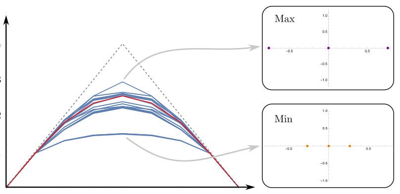
<figcaption class="paper-figure-caption"><b>Fig 1.</b> Figure 4.1: Entanglement entropy of primary states for L = 8, M = 3. Blue lines correspond to Bethe states obtained from regular solutions, while the red line represents the singular solution. The dashed gray line indicates the crosscap state, which has maximal entanglement.</figcaption>
</figure>
<figure class="paper-figure-card">
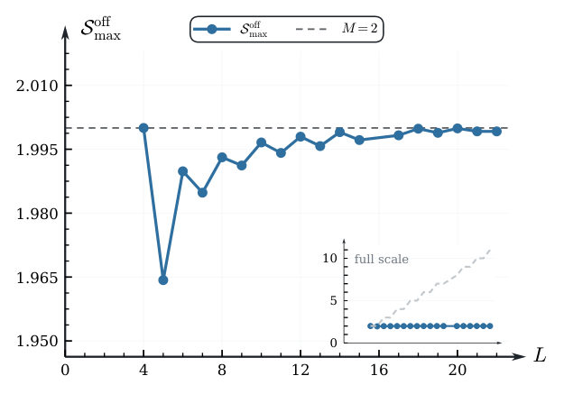
<figcaption class="paper-figure-caption"><b>Fig 2.</b> Figure 4.2: The fixed-M = 2 off-shell maximum approaches the partition upper bound 2 as L grows. Data are for the XXX 1</figcaption>
</figure>
<figure class="paper-figure-card">
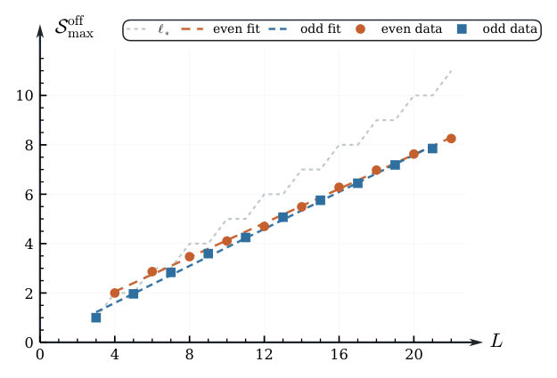
<figcaption class="paper-figure-caption"><b>Fig 3.</b> Figure 4.3: Half-filled XXX1/2 off-shell maxima grow linearly with L. The dashed lines are separate linear fits to the even-L data for 4 ≤L ≤22 and the odd-L data for 3 ≤L ≤21, with ℓ= ⌊L/2⌋.</figcaption>
</figure>
<figure class="paper-figure-card">
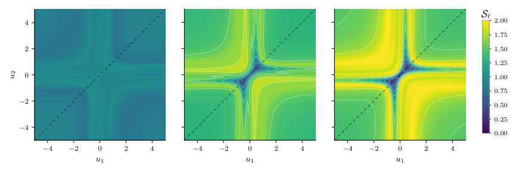
<figcaption class="paper-figure-caption"><b>Fig 4.</b> Figure 4.4: The real-rapidity slice shows how the M = 2 off-shell entropy approaches its maximum along unbounded directions. The plots show Sℓ(u1, u2) for the XXX1/2 chain at L = 6, M = 2, and ℓ= 1, 2, 3, with a common color scale; white curves are iso-entropy contours and the dashed line marks u1 = u2.</figcaption>
</figure>
<figure class="paper-figure-card">
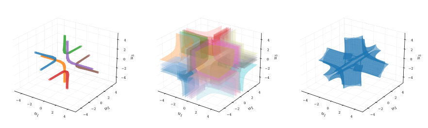
<figcaption class="paper-figure-caption"><b>Fig 5.</b> Figure 4.5: Real-slice iso-entropy surfaces provide the component pairs used in the complex-connectivity test. The panels show Sℓ=3(u1, u2, u3) = const for L = 6 and M = 3, restricted to (u1, u2, u3) ∈R3. At S = 2.70, the six visible components are the S3 permu- tation orbits of the optimum; near S = 2.00, the component count is close to its observed peak; by S = 1.50, the visible real-slice surface has merged into one component. These are real-slice visualization features, not a topological claim about the full complex rapidity level set.</figcaption>
</figure>
</div>

<p><strong>Summary.</strong> This paper rigorously investigates the bipartite entanglement entropy of Bethe states across various integrable spin chains, including $   ext{XXX}_{1/2}$ and $SL(2,\mathbb{R})$. Using sophisticated numerical optimization and analytical techniques like Schmidt decomposition, the authors map out how entanglement depends on the state's energy and root configuration. The findings establish systematic patterns for extremal entropy values while developing robust mathematical tools to handle complex singular solutions.</p>
<p><strong>Why it may be interesting.</strong> This work provides deep insights into the geometric structure of entanglement within highly constrained quantum systems, linking spectral properties (Bethe states) directly to information-theoretic measures like entropy. The comparison between compact and non-compact chains is particularly relevant for understanding boundary effects in condensed matter models.</p>
<details>
<summary>Detailed structure</summary>
<p><strong>Main problem.</strong> The study investigates how quantum entanglement, quantified by bipartite entanglement entropy, behaves across different Bethe states in a family of integrable spin chains.</p>
<p><strong>Main result.</strong> The minimum entanglement entropy often coincides with the ground state for simple models (XXX$_{1/2}$), but this is not guaranteed for higher-spin generalizations. The analysis reveals distinct scaling behaviors for compact versus non-compact chains like $SL(2, \mathbb{R})$.</p>
<p><strong>Method.</strong> The authors employ advanced analytical and numerical techniques, including Schmidt decomposition, variational optimization over rapidities (both on-shell and off-shell), and regularization procedures to handle singular solutions.</p>
<p><strong>Model / system.</strong> The research focuses on integrable quantum spin chains: the XXX$_{1/2}$ model, higher-spin generalizations ($    ext{XXX}_s$), and the non-compact $SL(2,\mathbb{R})$ chain. The states analyzed are Bethe eigenstates characterized by rapidities $\{u_j\}$.</p>
<p><strong>Key observables.</strong> Bipartite entanglement entropy ($S_\ell$), minimum entropy ($S_{\min}$), maximum entropy ($S_{\max}$), and the corresponding sets of Bethe quantum numbers ($\{I_j\}$).</p>
<p><strong>Important parameters / regimes.</strong> System size ($L$), subsystem size ($\ell$), magnon number ($M$), and the nature of the chain (compact vs. non-compact).</p>
<p><strong>Assumptions / limitations.</strong> The analysis relies on developing complex regularization procedures to handle singular rapidities and assumes that specific limits (e.g., $\epsilon 	o 0$) yield physically meaningful product states with zero entropy.</p>
<p><strong>Figures summary.</strong> Multiple tables systematically map out the dependence of $S_{\min}$ and $S_{\max}$ on subsystem size ($\ell$) for fixed system parameters ($L, M$), detailing specific extremal rapidities found in various spin sectors (Spin 1, Spin 3/2).</p>
<p><strong>Paper structure.</strong> The paper progresses from defining the entanglement calculation via Schmidt decomposition to applying optimization algorithms for off-shell states. It then systematically analyzes different models ($    ext{XXX}_{1/2}$, $  ext{XXX}_s$, $SL(2,\mathbb{R})$), culminating in detailed mathematical derivations concerning singular roots and regularization techniques.</p>
</details>
<details>
<summary>Abstract</summary>
<p>We investigate the quantum entanglement of Bethe states across a family of integrable spin chains, including the XXX$_{\frac{1}{2}}$ model, its higher-spin generalizations (XXX$_s$), and the non-compact $SL(2,\mathbb{R})$ chain. For on-shell eigenstates, we perform a comprehensive scan of the bipartite entanglement entropy across the entire spectrum of finite chains with periodic boundary conditions, and identify the Bethe solutions that minimize and maximize the entanglement. These extremal solutions follow systematic, spin-dependent patterns in the Bethe quantum numbers. In the XXX$_{\frac{1}{2}}$ spin chain, for the antiferromagnetic chain, the state with minimal entropy always coincides with the lowest-energy state (the ground state) within a given fixed-magnon sector. For the higher-spin XXX$_s$ model, however, the lowest-entropy state is not always identical to the ground state, and can even be the state of highest energy. By contrast, the Bethe roots that maximize entropy exhibit considerably more intricate structure. Our analysis further reveals how special Bethe root configurations, such as singular and strange solutions, affect entanglement, and it uncovers characteristic entanglement features in the non-compact $SL(2,\mathbb{R})$ chain that are absent from compact spin chains. For off-shell Bethe states, we develop an optimization algorithm that extremizes the entanglement entropy over rapidity distributions, enabling us to explore the maximum entanglement achievable by a Bethe state without imposing the Bethe ansatz equations.</p>
</details>
<p><sub><a href="#top">↑ back to top</a></sub></p>

<p><a id="paper-2606.14204"></a></p>
<h3 id="simultaneous-estimation-of-partial-transpose-moments-with-active-memory-independent-of-the-moment-order"><a href="http://arxiv.org/abs/2606.14204v1">Simultaneous Estimation of Partial-Transpose Moments with Active Memory Independent of the Moment Order</a></h3>
<p><strong>Authors:</strong> Junxiang Huang, Xiaoyang Wang, Xiao Yuan, Yukun Zhang<br>
<strong>Type:</strong> theory · <strong>Category:</strong> quantum information and computing · <strong>PDF:</strong> <a href="https://arxiv.org/pdf/2606.14204v1">https://arxiv.org/pdf/2606.14204v1</a><br>
<strong>Analysis basis:</strong> full PDF text, analyzed in chunks
<strong>Topic relevance:</strong> 🔥 <code>entanglement &amp; information structure</code> <strong>4/5</strong> · <code>quantum measurements</code> <strong>2/5</strong></p>
<div class="figure-strip-hint">↔ Scroll figures horizontally</div>
<div class="paper-figures-scroll">
<figure class="paper-figure-card">
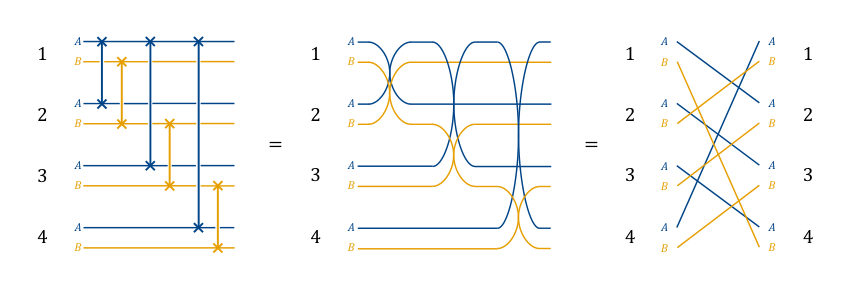
<figcaption class="paper-figure-caption"><b>Fig 1.</b> Fig. 1. Topological view of the PT permutation. Subsystem A follows the forward cycle and subsystem B follows the inverse cycle. The crossings are schematic routing events that are unfolded into a time-domain sequential implementation.</figcaption>
</figure>
<figure class="paper-figure-card">

<figcaption class="paper-figure-caption"><b>Fig 2.</b> Fig. 2. Sequential qubit-reuse circuit for PT moments. One storage copy and one fresh transient copy interact through an ancilla-controlled routing layer; the transient register is then reset and reloaded. The active qubit count is always 2n + 1, independent of the target order K.</figcaption>
</figure>
<figure class="paper-figure-card">

<figcaption class="paper-figure-caption"><b>Fig 3.</b> Fig. 3. LCSP-style coherent post-processing circuit. It illustrates the PT-LCSP construction used in Appendix E.</figcaption>
</figure>
<figure class="paper-figure-card">

<figcaption class="paper-figure-caption"><b>Fig 4.</b> Fig. 4. Noiseless numerical sanity check of the sequential estimator. The upper panels compare exact PT moments with the qubit-reuse estimates, while the lower panels show residuals fluctuating around zero within the expected statistical scale. This figure is included only as a compact consistency check of the analytical identities proved in the paper.</figcaption>
</figure>
<figure class="paper-figure-card">

<figcaption class="paper-figure-caption"><b>Fig 5.</b> Fig. 5. Small-scale cloud compatibility demonstration of PT-moment estimation with CDR mitigation [56]. We estimate PT moments up to order K = 5 for a three-qubit test state using dynamic circuits executed through the IBM Quantum cloud platform. Top panel: comparison between exact values (black), raw estimates (gray), and CDR-mitigated estimates (blue). Bottom panel: corresponding absolute errors with respect to the exact theory. The mitigated data show a systematic improvement over the raw estimates.</figcaption>
</figure>
</div>

<p><strong>Summary.</strong> This theoretical paper characterizes the minimum number of quantum copies required to simultaneously estimate a sequence of partial-transpose moments for an unknown bipartite quantum state. By developing resource-efficient quantum circuits and proving matching lower bounds, it establishes the fundamental scaling laws for this type of nonlinear functional estimation under active memory constraints.</p>
<p><strong>Why it may be interesting.</strong> This work provides fundamental resource characterizations for estimating non-local properties (like entanglement via PT moments) of quantum states, which is crucial for designing efficient quantum measurement protocols in quantum information processing.</p>
<details>
<summary>Detailed structure</summary>
<p><strong>Main problem.</strong> The study focuses on developing efficient protocols for simultaneously estimating multiple partial-transpose moments of an unknown bipartite quantum state under strict active-memory constraints.</p>
<p><strong>Main result.</strong> The authors achieve a total copy complexity scaling of $O(K \log K / \epsilon^2)$ while maintaining an active memory cost independent of the moment order $K$.</p>
<p><strong>Method.</strong> They employ sequential qubit-reuse quantum circuits to realize the partial-transpose permutation, comparing the achievable upper bound with established minimax lower bounds.</p>
<p><strong>Model / system.</strong> The system is a bipartite $n$-qubit quantum state $
ho_{AB}$. The analysis revolves around estimating Partial-Transpose (PT) moments, which are related to entanglement measures like negativity.</p>
<p><strong>Key observables.</strong> Partial-transpose moments $\{p_j(
ho_{AB})\}_{j=2}^K = 	ext{Tr}[(
ho^{T_B})_{AB}^j]$, and the resulting estimate of quantum negativity.</p>
<p><strong>Important parameters / regimes.</strong> $K$ (target moment order), $\epsilon_{	ext{mom}}$ (desired uniform additive error for all moments simultaneously).</p>
<p><strong>Assumptions / limitations.</strong> The analysis assumes an active-memory constraint where memory usage must not scale with $K$. A logarithmic gap exists between the upper and lower bounds.</p>
<p><strong>Figures summary.</strong> Figures illustrate the topological view of the PT permutation circuit, the sequential qubit-reuse circuit realizing the moments, and comparisons of estimated moments against exact theory using noise mitigation techniques.</p>
<p><strong>Paper structure.</strong> The paper establishes the problem by defining the PT moment hierarchy, presents an achievable quantum protocol with complexity $O(K \log K / \epsilon^2)$, and rigorously proves lower bounds ($\Omega(K/\epsilon^2)$) using hard state families to characterize the necessary resource scaling.</p>
</details>
<details>
<summary>Abstract</summary>
<p>We study the simultaneous estimation of partial-transpose moments $p_j(ρ_{AB})=\mathrm{Tr}[(ρ_{AB}^{T_B})^j]$, $j=2,\ldots,K$, of an unknown bipartite $n$-qubit state from independent copies under an explicit active-memory constraint. We give a sequential qubit-reuse realization of the partial-transpose permutation that uses at most $2n+1$ active qubits, independent of $K$, and estimates all moments $p_2,\ldots,p_K$ to uniform additive error $ε$ with total copy complexity $O(K\log K/ε^2)$. We also prove two converse bounds. First, any uniformly accurate simultaneous estimator requires $Ω(K/ε^2)$ copies in the worst case. Second, the same scaling holds on an explicit isospectral two-qubit negative-partial-transpose (NPT) family whose ordinary moments are constant while the partial-transpose moments vary. These results characterize the copy complexity of the partial-transpose moment hierarchy up to a logarithmic factor and extend simultaneous nonlinear-functional estimation from ordinary state powers to partial-transpose spectral data under active quantum memory independent of the target moment order.</p>
</details>
<p><sub><a href="#top">↑ back to top</a></sub></p>

<p><a id="paper-2606.14163"></a></p>
<h3 id="collision-models-for-open-quantum-systems-coupled-to-finite-environments"><a href="http://arxiv.org/abs/2606.14163v1">Collision models for open quantum systems coupled to finite environments</a></h3>
<p><strong>Authors:</strong> Gyaneswar Bhoi, Anil Shaji<br>
<strong>Type:</strong> theory · <strong>Category:</strong> other · <strong>PDF:</strong> <a href="https://arxiv.org/pdf/2606.14163v1">https://arxiv.org/pdf/2606.14163v1</a><br>
<strong>Analysis basis:</strong> full PDF text, analyzed in chunks
<strong>Topic relevance:</strong> <code>correlated / nonlocal dissipation</code> <strong>3/5</strong> · <code>methods for driven-dissipative</code> <strong>3/5</strong> · <code>non-equilibrium dynamics</code> <strong>3/5</strong> · <code>Keldysh / 2PI / non-Gaussian methods</code> <strong>2/5</strong> · <code>driven-dissipative phase transition</code> <strong>2/5</strong> · <code>entanglement &amp; information structure</code> <strong>2/5</strong> · <code>non-equilibrium universality</code> <strong>2/5</strong> · <code>Kondo &amp; dissipative impurity</code> <strong>1/5</strong> · <code>quantum measurements</code> <strong>1/5</strong> · <code>scars &amp; prethermalization</code> <strong>1/5</strong></p>
<div class="figure-strip-hint">↔ Scroll figures horizontally</div>
<div class="paper-figures-scroll">
<figure class="paper-figure-card">

<figcaption class="paper-figure-caption"><b>Fig 1.</b> FIG. 1. Schematic of the standard collision model. The en- vironment E is partitioned into independent ancillae ai, each interacting with S once via Ui(τ) before being discarded.</figcaption>
</figure>
<figure class="paper-figure-card">

<figcaption class="paper-figure-caption"><b>Fig 2.</b> FIG. 2. Schematic of the modified collision model. The sys- tem S repeatedly interacts with the same environment qubit E via USE(τ), while a reservoir-induced CPTP map E(τ1) acts on E between successive collisions. Unlike the standard con- struction, the environment is not discarded after each step, so system–environment correlations (dashed links) persist and accumulate, rendering the reduced dynamics of S history de- pendent.</figcaption>
</figure>
<figure class="paper-figure-card">

<figcaption class="paper-figure-caption"><b>Fig 3.</b> FIG. 4. Divisibility measure Ndiv in the (s, λ) parameter space for the same parameters as Fig. 3. The witness is nonzero throughout the interior s, λ &gt; 0, including in regions where NBLP = 0, revealing a CP-indivisible yet P-divisible regime between the two phase boundaries.</figcaption>
</figure>
<figure class="paper-figure-card">

<figcaption class="paper-figure-caption"><b>Fig 4.</b> FIG. 3. BLP non-Markovianity measure NBLP in the (s, λ) parameter space, evaluated over n = 100 collisions with b(0) 1 = 1, b(0) 2 = b(0) 3 = 0, and G0 = 1. The green dots denotes points on (s, λ) plane for which the dynamics is Markovian while the red dots denote the non-Markovian regime where NBLP is greater than a small threshold value of 10−8. The measure vanishes along the dashed boundaries s = 0 and λ = 0, which are Markovian by construction. Non-Markovian dynamics emerges above when λ &gt; λ∗(s) with λ∗(s) traced out by the boundary between the green and red dots in the figure. We see that λ∗(s) decreases with increasing interac- tion strength.</figcaption>
</figure>
<figure class="paper-figure-card">

<figcaption class="paper-figure-caption"><b>Fig 5.</b> FIG. 5. Divisibility measure Ndiv in the restricted region s, λ ∈[0, 0.05], revealing the onset of CP-indivisibility.</figcaption>
</figure>
</div>

<p><strong>Summary.</strong> This paper develops collision models for open quantum systems coupled to finite environments, analyzing the complex dynamics arising from repeated interactions. By introducing controlled environmental resets, the authors map out distinct dynamical regimes—ranging from fully Markovian to highly non-Markovian—using advanced mathematical tools like divisibility witnesses. It provides a detailed understanding of how memory effects are quantified and suppressed in realistic quantum scenarios.</p>
<p><strong>Why it may be interesting.</strong> This work provides a rigorous theoretical toolkit to analyze open quantum systems when environmental memory effects are crucial, offering quantitative diagnostics (BLP, divisibility) beyond simple Markovian assumptions.</p>
<details>
<summary>Detailed structure</summary>
<p><strong>Main problem.</strong> The study investigates non-Markovian dynamics in open quantum systems where the environment is finite and repeatedly interacts with the system, moving beyond standard Born-Markov approximations.</p>
<p><strong>Main result.</strong> The authors establish a clear classification of dynamical regimes (e.g., CP-divisible Markovian vs. non-P-divisible non-Markovian) based on environmental reset strength, showing that perfect correlation erasure requires a full environmental reset.</p>
<p><strong>Method.</strong> The analysis employs collision models and utilizes advanced diagnostics like the Breuer–Laine–Piilo (BLP) measure and Choi-matrix divisibility witnesses to characterize memory effects.</p>
<p><strong>Model / system.</strong> The model consists of a system qubit interacting repeatedly with a finite environmental qubit, where the environment's state is modulated by an intermediate reservoir-induced CPTP map between collisions.</p>
<p><strong>Key observables.</strong> System-environment correlations ($\chi_{SE}$), Non-Markovianity (BLP measure), and Divisibility measures (CP/P-divisibility).</p>
<p><strong>Important parameters / regimes.</strong> The dimensionless relaxation parameter ($\lambda$ or $\kappa$) controlling the degree of environmental reset, and interaction strengths ($s$).</p>
<p><strong>Assumptions / limitations.</strong> The analysis builds upon collision models and assumes specific forms for the reservoir action (e.g., generalized depolarizing/amplitude damping channels) to control the environment's state.</p>
<p><strong>Figures summary.</strong> Figures illustrate phase boundaries in parameter space ($\lambda$ vs $s$, or $\kappa$ vs $s$) separating Markovian from non-Markovian regimes, and show the decay of map determinants over time steps.</p>
<p><strong>Paper structure.</strong> The paper systematically develops the collision model framework, contrasts it with standard assumptions, derives explicit forms for the n-step dynamical maps under partial reset, and finally classifies the resulting dynamics into distinct mathematical regimes based on memory retention and CP properties.</p>
</details>
<details>
<summary>Abstract</summary>
<p>We study a system qubit repeatedly interacting with the same environmental qubit, with a reservoir acting on the environment between collisions via a completely positive, trace-preserving map. We show that complete suppression of system--environment correlations uniquely requires a full environmental reset, recovering a semi group dynamics with a time-independent Gorini--Kossakowski--Sudarshan--Lindblad generator, whereas a partial reset yields a continuous transition between Markovian and non-Markovian regimes governed by a single dimensionless relaxation parameter. For a resonant excitation-exchange interaction, we obtain exact closed-form expressions for the Bloch-vector dynamics for both a generalized depolarizing channel and a generalized amplitude-damping channel acting as the reservoir-induced map. Using the Breuer--Laine--Piilo measure and a Choi-matrix CP-divisibility witness, we identify three distinct dynamical regimes across the parameter space: CP-divisible Markovian dynamics, CP-indivisible but P-divisible dynamics, and non-P-divisible non-Markovian dynamics. The boundaries between these regimes, and the structural differences between uniform and anisotropic environmental relaxation, are characterized numerically.</p>
</details>
<p><sub><a href="#top">↑ back to top</a></sub></p>

<p><a id="paper-2606.13857"></a></p>
<h3 id="local-correlations-in-long-range-dual-unitary-kicked-hamiltonian-chains"><a href="http://arxiv.org/abs/2606.13857v1">Local correlations in long-range dual-unitary kicked Hamiltonian chains</a></h3>
<p><strong>Authors:</strong> Vladimir Al. Osipov, Marc Cedric Spyra, Jana Carolina Schumann, Thomas Guhr, Boris Gutkin<br>
<strong>Type:</strong> theory · <strong>Category:</strong> disordered systems and neural networks · <strong>PDF:</strong> <a href="https://arxiv.org/pdf/2606.13857v1">https://arxiv.org/pdf/2606.13857v1</a><br>
<strong>Analysis basis:</strong> full PDF text, analyzed in chunks
<strong>Topic relevance:</strong> <code>methods for driven-dissipative</code> <strong>3/5</strong> · <code>non-equilibrium dynamics</code> <strong>3/5</strong> · <code>Keldysh / 2PI / non-Gaussian methods</code> <strong>2/5</strong> · <code>analog quantum simulation</code> <strong>2/5</strong> · <code>driven-dissipative phase transition</code> <strong>2/5</strong> · <code>entanglement &amp; information structure</code> <strong>2/5</strong> · <code>non-equilibrium universality</code> <strong>2/5</strong> · <code>Frenkel-Kontorova</code> <strong>1/5</strong> · <code>correlated / nonlocal dissipation</code> <strong>1/5</strong> · <code>exotic spin models in light-matter</code> <strong>1/5</strong> · <code>scars &amp; prethermalization</code> <strong>1/5</strong></p>
<div class="figure-strip-hint">↔ Scroll figures horizontally</div>
<div class="paper-figures-scroll">
<figure class="paper-figure-card">

<figcaption class="paper-figure-caption"><b>Fig 1.</b> Figure 1. Shown on the upper left is a single layer of the two-dimensional KIC with nearest-neighbor interactions. The upper right figure depicts the equivalent spin chain with next-nearest-neighbor interactions corresponding to r = 2. The model is dual-unitary for J = π/4. The lower panel shows a generalization of this construction, namely a dual-unitary spin chain in which all neighboring sites are coupled. The homogeneous case is obtained for J1 = J2.</figcaption>
</figure>
<figure class="paper-figure-card">

<figcaption class="paper-figure-caption"><b>Fig 2.</b> Figure 2. The figure illustrates correlations ⟨Q1(0, 0)Q2(k, t)⟩between a pair of observables localized at (0, 0) and (k, t), k = rn+m points of the space-time, respectively. For a general kicked model with interactions between r neighbors correlations in the shadowed, blue (color on-line) region, |k| &gt; r|t|, vanish due to causality if ⟨Q1⟩= ⟨Q2⟩= 0, see the left picture. For a dual unitary model, illustrated by the right picture, one has ⟨Q1(0, 0)Q2(k, t)⟩= ⟨Q1(0, 0)Q2(¯k, ¯t)⟩, where ¯k = rt+m, ¯t = n. As a result, correlations here vanish everywhere except light cone edges, |k| = r|t|, depicted by the two blue (color on-line) lines.</figcaption>
</figure>
<figure class="paper-figure-card">

<figcaption class="paper-figure-caption"><b>Fig 3.</b> Figure 3. Two-point correlations between operators (27,28) for q1 = σz, q2 = σ0, q3 = σy, q4 = σ0, q5 = σz, q6 = σ0, q7 = σy, q8 = σ0, with parameters h = 1, J = 1, 5. The left picture (a) depicts correlations for the case J1 = J, J2 = 0, The right picture (b) depicts correlations for the case J1 = J, J2 = J, As one can observe, solely the correlations along the light cone edges (|n| = 2|t|) do not vanish in both cases.</figcaption>
</figure>
<figure class="paper-figure-card">

<figcaption class="paper-figure-caption"><b>Fig 4.</b> Figure 4. The average value of ratio of consecutive level spacings (46) for the spectrum of the dual-unitary spin chain with the next-to-next neighbor interaction for N = 15, J = 0 (left) and N = 15, J = π/4 (right), respectively. The value of r is averaged over all values in the separate (translation) symmetry sectors of k = 1, . . . , 7 and shown as a function of h. Note that the graph is symmetric under reflection h →π−h. For generic values of h the data for ⟨r⟩fit the circular orthogonal ensemble (COE) prediction. The dips at h = 0, π/4, π/3 (left) and at h = 0, π/4 (right) correspond to spectral statistics characteristic of integrable systems.</figcaption>
</figure>
</div>

<p><strong>Summary.</strong> The paper constructs an extensive family of dual-unitary kicked spin chains featuring long-range interactions. It analytically proves that local correlations are strictly confined to specific light-cone edges defined by the interaction range. This provides deep insights into the spatial and temporal structure of quantum dynamics in highly symmetric, non-local many-body systems.</p>
<p><strong>Why it may be interesting.</strong> This work provides a rigorous theoretical framework for analyzing dynamics in complex quantum many-body systems exhibiting long-range interactions while preserving special symmetries (dual unitarity), which is crucial for understanding transport and correlation spreading in engineered quantum materials.</p>
<details>
<summary>Detailed structure</summary>
<p><strong>Main problem.</strong> The study investigates how local correlations propagate within long-range dual-unitary kicked Hamiltonian chains.</p>
<p><strong>Main result.</strong> Local two-point correlations are found to propagate exclusively along specific light-cone edges, $|k| = r|t|$, and these correlations can be derived analytically for a wide family of such models.</p>
<p><strong>Method.</strong> The analysis employs techniques based on establishing spatio-temporal duality using Hadamard matrices and calculating correlation functions via transfer operators or direct trace manipulations.</p>
<p><strong>Model / system.</strong> The system is a generalized Kicked Ising Chain (KIC) extended to include long-range interactions ($r>1$) while maintaining the dual-unitary symmetry. The dynamics are governed by time evolution operators $U = \hat{U}_K \hat{U}_I$.</p>
<p><strong>Key observables.</strong> Local two-point correlation function $C(n, m, t)$, and spectral statistics diagnostics like the ratio of consecutive level spacings ($r$).</p>
<p><strong>Important parameters / regimes.</strong> Interaction range ($r$), coupling parameters ($J, h$), and time/space indices ($t, n, k$).</p>
<p><strong>Assumptions / limitations.</strong> The construction relies on adding fine-tuned pairwise interactions to maintain dual unitarity with long-range couplings; periodic boundary conditions are assumed for some calculations.</p>
<p><strong>Figures summary.</strong> Figures illustrate the vanishing of correlations outside light cone edges $|k| = r|t|$ and show spectral statistics matching COE predictions for generic parameters, deviating at integrable points.</p>
<p><strong>Paper structure.</strong> The paper develops the construction of long-range dual-unitary models, proves spatio-temporal duality relations, derives the structure of the correlation function $C(t)$ using transfer operators, and analyzes its decay rates and spectral statistics.</p>
</details>
<details>
<summary>Abstract</summary>
<p>Many-body Floquet models with exact space--time symmetry, such as the kicked Ising spin chain (KIC), provide natural examples of systems with dual-unitary dynamics. The requirement of exact space--time symmetry is, however, highly restrictive, as it permits only nearest-neighbor interactions. Based on a pair of Hadamard matrices, we construct a wide family of dual-unitary kicked spin chains with long-range interactions. We show that local two-point correlations in such models propagate along the light-cone edges \( |n| = r|t| \), where \(r\) is the interaction range, and can be derived analytically for operators with local support. This approach is illustrated using the example of a kicked Ising spin chain with next-to-next-neighbor interactions.</p>
</details>
<p><sub><a href="#top">↑ back to top</a></sub></p>

<p><a id="paper-2606.14489"></a></p>
<h3 id="physics-informed-variational-quantum-classifier-for-phase-detection-in-strongly-correlated-matter"><a href="http://arxiv.org/abs/2606.14489v1">Physics-Informed Variational Quantum Classifier for Phase Detection in Strongly Correlated Matter</a></h3>
<p><strong>Authors:</strong> Hugo Catalá, Ezequiel Valero, Germán Rodrigo<br>
<strong>Type:</strong> both · <strong>Category:</strong> quantum gases · <strong>PDF:</strong> <a href="https://arxiv.org/pdf/2606.14489v1">https://arxiv.org/pdf/2606.14489v1</a><br>
<strong>Analysis basis:</strong> full PDF text, analyzed in chunks
<strong>Topic relevance:</strong> <code>analog quantum simulation</code> <strong>3/5</strong> · <code>methods for driven-dissipative</code> <strong>3/5</strong> · <code>Kondo &amp; dissipative impurity</code> <strong>2/5</strong> · <code>QC/QI experiment</code> <strong>2/5</strong> · <code>measurement-induced transitions</code> <strong>2/5</strong> · <code>quantum measurements</code> <strong>2/5</strong> · <code>Keldysh / 2PI / non-Gaussian methods</code> <strong>1/5</strong> · <code>correlated / nonlocal dissipation</code> <strong>1/5</strong> · <code>driven-dissipative phase transition</code> <strong>1/5</strong> · <code>entanglement &amp; information structure</code> <strong>1/5</strong> · <code>interference shaping light</code> <strong>1/5</strong> · <code>non-equilibrium dynamics</code> <strong>1/5</strong></p>
<div class="figure-strip-hint">↔ Scroll figures horizontally</div>
<div class="paper-figures-scroll">
<figure class="paper-figure-card">

<figcaption class="paper-figure-caption"><b>Fig 1.</b> Figure 1. Physics-Informed VQC Architecture for Polaron Phase Detection. (A) Schematic representation of the Ramsey interferometry protocol. The state preparation phase initialises the impurity and the Fermi sea bath modes via a CNOT entanglement and an Ry(Θ) rotation. The temporal dynamics are governed by Nsteps = 4 identical variational layers (Ustep), conditioned on the ancilla qubit (q0). The measurement on the ancilla yields the expectation value ⟨Z0⟩, which is strictly mapped to the phase probability via a linear transformation. (B) Gate-level decomposition of a single Trotter evolution step (Ustep). The effective Hamiltonian is natively encoded using controlled-Rzz(ϕ) and Rz(ϕ) gates...</figcaption>
</figure>
<figure class="paper-figure-card">

<figcaption class="paper-figure-caption"><b>Fig 2.</b> Figure 2. Learned Quantum Phase Diagram (N = 4). Phase boundary inferred by the Physics-Informed VQC for a target system of N = 4 qubits. The dashed line delineates the BEC-BCS crossover, explicitly defined at ˆy(x) = 0.5. The markers represent the synthetic training data. The boundary is strictly governed by the underlying Ramsey fringes [13]. This confirms that the VQC natively relies on coherent quan- tum interference, rather than classical geometric separation, to distinguish the phases.</figcaption>
</figure>
<figure class="paper-figure-card">

<figcaption class="paper-figure-caption"><b>Fig 3.</b> Figure 3. Scaled Quantum Phase Diagram (N = 10). Phase boundary inferred by the physics-informed VQC for an extended register of N = 10 qubits, corresponding to a many- body bath of M = 4 Cooper pairs. The dashed line delineates the BEC-BCS crossover, explicitly defined at ˆy(x) = 0.5. The data points denote the sampled training distributions for the BEC (blue circles) and BCS (red squares) regimes. The model successfully scales with a larger Hilbert space.</figcaption>
</figure>
<figure class="paper-figure-card">

<figcaption class="paper-figure-caption"><b>Fig 4.</b> Figure 4. Demonstration on QRed with N = 4 qubits. Classifier output for five representative points across the phase diagram. The dashed line marks the theoretical deci- sion boundary at ˆy(x) = 0.5. Error bars indicate the 1σ statis- tical dispersion of three independent runs with Nshots = 1024 each.</figcaption>
</figure>
<figure class="paper-figure-card">

<figcaption class="paper-figure-caption"><b>Fig 5.</b> Figure 5. Demonstration on QRed with N = 10 qubits. Classifier output for five representative points across the phase diagram. The dashed line marks the theoretical deci- sion boundary at ˆy(x) = 0.5. Error bars indicate the 1σ statis- tical dispersion of three independent runs with Nshots = 1024 each. Due to the increased circuit depth and hardware noise, the raw signals exhibit larger compression than for N = 4 qubits.</figcaption>
</figure>
</div>

<p><strong>Summary.</strong> The authors propose and implement a Physics-Informed Variational Quantum Classifier (VQC) to detect topological phase transitions in strongly correlated fermionic systems, such as the BEC-BCS crossover. By encoding the system dynamics via Trotterized time evolution, the VQC achieves linear scaling complexity ($\mathcal{O}(N)$). This approach successfully demonstrates robust phase classification on superconducting quantum hardware despite inherent noise.</p>
<p><strong>Why it may be interesting.</strong> This work directly bridges quantum computation with fundamental condensed matter physics problems (BEC-BCS crossover), providing a scalable quantum sensing tool that circumvents the memory wall of classical simulations for many-body systems.</p>
<details>
<summary>Detailed structure</summary>
<p><strong>Main problem.</strong> The core problem is characterizing quantum phases, specifically detecting the topological phase transition between the Fermi polaron quasiparticle and the molecular bound state (BEC-BCS crossover) in strongly correlated matter.</p>
<p><strong>Main result.</strong> A Physics-Informed Variational Quantum Classifier (VQC) was developed that successfully distinguishes these phases on both simulated and noisy superconducting quantum hardware, demonstrating linear scaling complexity.</p>
<p><strong>Method.</strong> The VQC is constructed using the Trotterized time-evolution of an effective Hamiltonian derived from Ramsey interferometry protocols, ensuring physical interpretability in its parameters.</p>
<p><strong>Model / system.</strong> The system models ultracold Fermi gases involving an impurity coupled to a bath of fermions. The dynamics are governed by an effective Hamiltonian whose evolution is mapped onto quantum gates for classification.</p>
<p><strong>Key observables.</strong> Ramsey fringes visibility, the expectation value of Pauli-Z on the ancilla qubit ($\langle Z_0 
angle$), and the resulting phase probability $\hat{y}(x)$.</p>
<p><strong>Important parameters / regimes.</strong> The system is analyzed across BEC and BCS regimes, with key learned parameters being the optimal Trotter step size ($\delta t$) and effective bath-bath interaction ($U_{ff}$).</p>
<p><strong>Assumptions / limitations.</strong> The method assumes that the classification can be achieved by measuring the interferometric correlation $\langle Z_0 
angle$, and it relies on the VQC structure to enforce physical constraints.</p>
<p><strong>Figures summary.</strong> Figures illustrate the VQC architecture, the learned quantum phase diagram showing decision boundaries governed by Ramsey fringes for $N=4$ and $N=10$, and comparisons between ideal simulation versus noisy hardware measurements.</p>
<p><strong>Paper structure.</strong> The paper introduces the physical problem (phase detection), details the physics-informed VQC methodology based on Trotterization, presents results validating phase separation on superconducting hardware, and concludes by comparing its linear scaling advantage ($\mathcal{O}(N)$) against classical exponential simulation limits ($\mathcal{O}(2^{2N})$).</p>
</details>
<details>
<summary>Abstract</summary>
<p>The characterisation of quantum phases in strongly correlated systems is a crucial milestone for the deployment of quantum sensors. In this work, we present a Physics-Informed Variational Quantum Classifier (VQC) designed to detect the topological phase transition between the Fermi polaron quasiparticle and the molecular bound state. Unlike conventional Machine Learning approaches, our quantum architecture is constructed via the Trotterised time-evolution of an effective Hamiltonian, ensuring that the learnable parameters correspond to interpretable physical quantities. We show that the VQC efficiently discovers the optimal interferometric protocol, specifically the evolution time and effective bath interactions required to maximise the visibility of Ramsey fringes, thereby clearly distinguishing the Bose-Einstein Condensate (BEC) and Bardeen-Cooper-Schrieffer (BCS) regimes. Furthermore, we report the validation of this classifier on the QRed superconducting quantum processor (BSC-CNS). Despite the intrinsic hardware noise and decoherence, the VQC preserves the relative ordering of the topological phases. We demonstrate that the physics-informed architecture achieves a linear gate complexity $\mathcal{O}(N)$, bypassing the exponential memory wall of classical simulation and ensuring scalability to many-body regimes.</p>
</details>
<p><sub><a href="#top">↑ back to top</a></sub></p>

<p><a id="paper-2606.14285"></a></p>
<h3 id="thermodynamic-framework-for-math380math-affinity"><a href="http://arxiv.org/abs/2606.14285v1">Thermodynamic Framework for $q$-Affinity</a></h3>
<p><strong>Authors:</strong> Dani Rodríguez-Castellanos, Petr Jizba<br>
<strong>Type:</strong> theory · <strong>Category:</strong> statistical mechanics · <strong>PDF:</strong> <a href="https://arxiv.org/pdf/2606.14285v1">https://arxiv.org/pdf/2606.14285v1</a><br>
<strong>Analysis basis:</strong> full PDF text, analyzed in chunks
<strong>Topic relevance:</strong> <code>methods for driven-dissipative</code> <strong>3/5</strong> · <code>non-equilibrium dynamics</code> <strong>3/5</strong> · <code>non-equilibrium universality</code> <strong>3/5</strong> · <code>Keldysh / 2PI / non-Gaussian methods</code> <strong>2/5</strong> · <code>correlated / nonlocal dissipation</code> <strong>2/5</strong> · <code>driven-dissipative phase transition</code> <strong>2/5</strong> · <code>Kondo &amp; dissipative impurity</code> <strong>1/5</strong> · <code>analog quantum simulation</code> <strong>1/5</strong> · <code>entanglement &amp; information structure</code> <strong>1/5</strong> · <code>scars &amp; prethermalization</code> <strong>1/5</strong></p>
<div class="figure-strip-hint">↔ Scroll figures horizontally</div>
<div class="paper-figures-scroll">
<figure class="paper-figure-card">

<figcaption class="paper-figure-caption"><b>Fig 1.</b> Low-resolution page preview, page 2</figcaption>
</figure>
<figure class="paper-figure-card">

<figcaption class="paper-figure-caption"><b>Fig 2.</b> Low-resolution page preview, page 3</figcaption>
</figure>
<figure class="paper-figure-card">

<figcaption class="paper-figure-caption"><b>Fig 3.</b> Low-resolution page preview, page 4</figcaption>
</figure>
<figure class="paper-figure-card">

<figcaption class="paper-figure-caption"><b>Fig 4.</b> Low-resolution page preview, page 5</figcaption>
</figure>
<figure class="paper-figure-card">

<figcaption class="paper-figure-caption"><b>Fig 5.</b> Low-resolution page preview, page 6</figcaption>
</figure>
</div>

<p><strong>Summary.</strong> This paper constructs a generalized thermodynamic framework using Rényi and Tsallis entropies to define $q$-affinities for non-equilibrium processes. It successfully extends the second law of thermodynamics to systems exhibiting strong correlations or non-Gibbsian statistics by deriving non-negative entropy production rates. This provides essential theoretical tools for analyzing complex, far-from-equilibrium physical systems.</p>
<p><strong>Why it may be interesting.</strong> This work provides powerful mathematical tools (generalized affinities and entropies) applicable to open quantum systems where non-Markovian or long-range effects invalidate standard thermodynamic descriptions.</p>
<details>
<summary>Detailed structure</summary>
<p><strong>Main problem.</strong> The paper develops a generalized thermodynamic framework for non-equilibrium affinities, extending classical concepts to systems with long-range interactions or strong correlations.</p>
<p><strong>Main result.</strong> It successfully derives $q$-affinities based on Rényi and Tsallis entropies, establishing a generalized second law structure ($\dot{S}_i \ge 0$) for these non-extensive systems.</p>
<p><strong>Method.</strong> The authors use master equation approaches and thermodynamic identities involving generalized entropies (Rényi/Tsallis) to define $q$-deformed entropy balance laws and affinities.</p>
<p><strong>Model / system.</strong> The framework applies to general non-equilibrium systems, particularly those undergoing Markov jump processes or described by reaction equilibria, moving beyond the standard Gibbsian assumptions.</p>
<p><strong>Key observables.</strong> Generalized thermodynamic force ($q$-affinity, $A^q$), Entropy Production Rate ($\dot{S}_i(T)_q$), and generalized free energy potentials ($\Phi_q$).</p>
<p><strong>Important parameters / regimes.</strong> The non-extensivity parameter $q$, which governs the deviation from standard Boltzmann/Shannon statistics.</p>
<p><strong>Assumptions / limitations.</strong> The framework relies on extending classical irreversible thermodynamics using non-extensive generalizations, assuming a Markovian embedding for local stochastic definitions.</p>
<p><strong>Paper structure.</strong> The paper progresses by first establishing the generalized affinity for Rényi entropy via free energy differences, then tackling Tsallis entropy using master equations to derive the entropy production rate. Finally, it consolidates these findings into a general $q$-deformed entropy balance law.</p>
</details>
<details>
<summary>Abstract</summary>
<p>We develop a thermodynamic framework for non-equilibrium affinities based on generalized entropies. In particular, we extend the classical concept of De Donder by introducing $q$-affinities associated with Rényi and Tsallis entropies. This in turn allows us to generalize thermodynamic driving forces to systems with long-range interactions and/or strong correlations. For Rényi entropy, we build on a thermodynamic interpretation due to Baez, where the entropy is expressed through finite differences of the Helmholtz free energy at two temperatures. This leads to a generalized thermodynamic potential whose derivative with respect to a reaction coordinate defines the Rényi $q$-affinity. The resulting expression admits a representation in terms of exponential work averages, establishing a connection to Jarzynski-type fluctuation relations. For Tsallis entropy, we consider Markov jump processes using a master-equation-based approach. We derive a $q$-deformed entropy balance law and obtain an explicit expression for the Tsallis entropy production rate, proving its non-negativity and thus recovering a generalized second-law structure. This allows to identify a local stochastic $q$-affinity with the generalized thermodynamic force entering the entropy production rate.</p>
</details>
<p><sub><a href="#top">↑ back to top</a></sub></p>

<p><a id="paper-2606.13792"></a></p>
<h3 id="rg-dynamics-of-irrelevant-fermion-operators-and-the-drag-coupling-mechanism"><a href="http://arxiv.org/abs/2606.13792v1">RG Dynamics of Irrelevant Fermion Operators and the Drag Coupling Mechanism</a></h3>
<p><strong>Authors:</strong> Jeremias Aguilera-Damia, Diego Rodriguez-Gomez, Jorge Russo<br>
<strong>Type:</strong> theory · <strong>Category:</strong> strongly correlated electrons · <strong>PDF:</strong> <a href="https://arxiv.org/pdf/2606.13792v1">https://arxiv.org/pdf/2606.13792v1</a><br>
<strong>Analysis basis:</strong> full PDF text, analyzed in chunks
<strong>Topic relevance:</strong> <code>Keldysh / 2PI / non-Gaussian methods</code> <strong>3/5</strong> · <code>analog quantum simulation</code> <strong>2/5</strong> · <code>driven-dissipative phase transition</code> <strong>2/5</strong> · <code>methods for driven-dissipative</code> <strong>2/5</strong> · <code>non-equilibrium universality</code> <strong>2/5</strong> · <code>Kondo &amp; dissipative impurity</code> <strong>1/5</strong> · <code>correlated cavity matter</code> <strong>1/5</strong> · <code>non-equilibrium dynamics</code> <strong>1/5</strong></p>
<div class="figure-strip-hint">↔ Scroll figures horizontally</div>
<div class="paper-figures-scroll">
<figure class="paper-figure-card">

<figcaption class="paper-figure-caption"><b>Fig 1.</b> FIG. 1. One-loop contributions to a) the 4-fermion BCS chan- nel, b) 8-fermion function (holes are depicted in red).</figcaption>
</figure>
<figure class="paper-figure-card">

<figcaption class="paper-figure-caption"><b>Fig 2.</b> FIG. 4. A sample of tree-level 8-fermi diagrams involving Yukawa interactions.</figcaption>
</figure>
</div>

<p><strong>Summary.</strong> This theoretical work analyzes how higher-order fermionic interactions evolve under renormalization group flow near a Fermi surface. It demonstrates that while these couplings are driven toward strong coupling by the BCS mechanism, they maintain a hierarchical suppression relative to the primary pairing interaction. The findings provide insights into the stability of non-Fermi liquid states and superconducting behavior in strongly correlated metals.</p>
<p><strong>Why it may be interesting.</strong> While focused on fermionic interactions, the RG flow techniques used—analyzing how irrelevant operators become relevant or suppressed relative to a primary pairing interaction—are highly relevant to understanding quantum criticality and emergent order in strongly correlated systems studied in AMO physics.</p>
<details>
<summary>Detailed structure</summary>
<p><strong>Main problem.</strong> The study investigates the renormalization-group (RG) flow of higher-dimensional fermionic interactions ($\psi^\dagger\psi)^{2n}$ in the presence of a Fermi surface.</p>
<p><strong>Main result.</strong> A 'drag mechanism' is shown to drive all higher-order couplings toward strong coupling, yet they remain parametrically suppressed relative to the BCS interaction. In NFL regimes, this enhancement does not destabilize the stable IR fixed point for sufficiently large N.</p>
<p><strong>Method.</strong> The analysis relies on calculating one-loop beta functions and solving coupled differential equations describing the running of various fermionic couplings under RG flow.</p>
<p><strong>Model / system.</strong> The models include non-relativistic $2+1$ dimensional fermions interacting via higher-order terms, initially analyzed near a Fermi surface (BCS context) and later extended to quantum critical metallic systems coupled to a boson.</p>
<p><strong>Key observables.</strong> Running couplings ($   ilde{g}_4(\mu)$, $  ilde{g}_8(\mu)$), stability of fixed points in coupling space $(\alpha, \lambda, \kappa)$, and the relationship between superconducting gap and critical temperature.</p>
<p><strong>Important parameters / regimes.</strong> The number of fermions ($N$), the chemical potential ($\mu$), and the critical threshold $N_{cr}=8$ are crucial parameters determining the system's stability.</p>
<p><strong>Assumptions / limitations.</strong> The analysis uses one-loop approximations, relies on specific kinematic corners for the drag effect, and assumes large-$N$ limits in some sections.</p>
<p><strong>Figures summary.</strong> Figures illustrate RG flow trajectories in coupling planes (e.g., $(\alpha, \lambda)$) showing how couplings evolve towards stable or unstable fixed points depending on system parameters like N.</p>
<p><strong>Paper structure.</strong> The paper progresses from analyzing the basic BCS drag effect using 4- and 8-fermion interactions near a Fermi surface to investigating this mechanism in $2+1$ dimensional Non-Fermi Liquid (NFL) models, concluding with stability analysis for superconducting applications.</p>
</details>
<details>
<summary>Abstract</summary>
<p>We study the renormalization-group flow of higher-dimensional fermionic interactions $(ψ^\dagger ψ)^{2n}$ in the presence of a Fermi surface. We show that the growth of the BCS four-fermion coupling induces a drag mechanism whereby higher-order fermionic couplings are driven to strong coupling in the infrared. We derive the corresponding beta functions and show that the drag effect applies generically to the whole tower of fermionic operators. Remarkably, although all couplings are driven toward the same strong-coupling scale, the renormalization-group flow preserves a hierarchy in which higher-dimensional operators remain parametrically suppressed relative to the BCS interaction. We then investigate this mechanism in a $2+1$-dimensional non-Fermi liquid coupled to a critical boson. While higher-order fermionic interactions are similarly enhanced along the flow, we show that they do not destabilize the IR stable non-Fermi-liquid fixed point, present for sufficiently large $N$. We briefly discuss possible implications for multicomponent superconductors and other strongly correlated metallic systems.</p>
</details>
<p><sub><a href="#top">↑ back to top</a></sub></p>

<p><a id="paper-2606.13972"></a></p>
<h3 id="mean-field-theory-of-myopic-self-avoiding-fractional-brownian-motion"><a href="http://arxiv.org/abs/2606.13972v1">Mean-field theory of myopic self-avoiding fractional Brownian motion</a></h3>
<p><strong>Authors:</strong> Rashad Bakhshizada, Skirmantas Janušonis, Ralf Metzler, Thomas Vojta<br>
<strong>Type:</strong> theory · <strong>Category:</strong> statistical mechanics · <strong>PDF:</strong> <a href="https://arxiv.org/pdf/2606.13972v1">https://arxiv.org/pdf/2606.13972v1</a><br>
<strong>Analysis basis:</strong> full PDF text, analyzed in chunks
<strong>Topic relevance:</strong> <code>non-equilibrium dynamics</code> <strong>3/5</strong> · <code>non-equilibrium universality</code> <strong>3/5</strong> · <code>driven-dissipative phase transition</code> <strong>2/5</strong> · <code>Frenkel-Kontorova</code> <strong>1/5</strong> · <code>Keldysh / 2PI / non-Gaussian methods</code> <strong>1/5</strong> · <code>analog quantum simulation</code> <strong>1/5</strong> · <code>correlated / nonlocal dissipation</code> <strong>1/5</strong> · <code>methods for driven-dissipative</code> <strong>1/5</strong></p>
<div class="figure-strip-hint">↔ Scroll figures horizontally</div>
<div class="paper-figures-scroll">
<figure class="paper-figure-card">

<figcaption class="paper-figure-caption"><b>Fig 1.</b> FIG. 1. MSD ⟨r2⟩vs time t for myopic self-avoiding FBM in two dimensions, for four values of α. The statistical er- rors of the data points are smaller than the symbol size. For α = 1.5 &gt; αc = 1, the MSD grows as ⟨r2⟩∼tα, recovering standard FBM scaling. For α = 1.0, 0.7, and 0.4, all at or below αc = 1, the asymptotic MSD exponent ¯α equals αc, regardless of α, demonstrating that the mean-density inter- action dominates the long-time dynamics. The values of ¯α are extracted from weighted power-law fits to the long-time behavior (solid lines). Their error represents the sum of statis- tical errors and systematic errors from choosing the fit range, and are given in units of the last digit,...</figcaption>
</figure>
<figure class="paper-figure-card">

<figcaption class="paper-figure-caption"><b>Fig 2.</b> FIG. 2. MSD ⟨r2⟩vs time t for myopic self-avoiding FBM in three dimensions, for five values of α. For α = 1.5 and 1.0, both above αc = 4/5, the MSD recovers the standard FBM scaling ⟨r2⟩∼tα. For α = 0.8, 0.6, and 0.4, all at or below αc = 4/5, the fitted exponent ¯α saturates at ¯α = αc = 4/5 regardless of α, confirming the interaction-dominated regime and the scaling prediction δ = 2/5. The values of ¯α are ex- tracted from weighted power-law fits to the long-time behav- ior (solid lines). The statistical errors of the data points are smaller than the symbol size.</figcaption>
</figure>
<figure class="paper-figure-card">

<figcaption class="paper-figure-caption"><b>Fig 3.</b> FIG. 4. 1D instantaneous probability density P(x, t) vs |x| for α = 0.7 &lt; αc = 4/3, compared to the analytical solu- tion (27). Curves for t = 220 and t = 222 are rescaled by the theoretically predicted factors (t/218)2/3 ≈2.52 and 6.35, respectively, to improve visibility. The data agree well with the characteristic bimodal, U-shaped structure — with par- ticles depleted at the origin and accumulating near the outer boundary |x| = ymaxt2/3. Small differences between theory and simulation can be attributed to the effects of finite time and finite ensemble size.</figcaption>
</figure>
<figure class="paper-figure-card">

<figcaption class="paper-figure-caption"><b>Fig 4.</b> FIG. 3. 1D integrated probability density Pint(|x|) vs |x| for α = 1.0 &lt; αc = 4/3. The analytical solution Eq. (25) (solid lines) agrees quantitatively with simulations (symbols) at three times t = 218, 220, 222. The density peaks at the origin and decays parabolically to zero at |x| = ymaxt2/3, con- firming the predicted scaling.</figcaption>
</figure>
<figure class="paper-figure-card">

<figcaption class="paper-figure-caption"><b>Fig 5.</b> FIG. 6. 2D instantaneous probability density P(r) vs r for the marginal case, α = αc = 1. The analytical solution Eq. (34) (solid line) agrees with simulations (symbols) at three times t = 218, 220, 222, rescaled by t/218 for visual clarity. The Gaussian decay for large r contrasts sharply with the hard cutoff seen in Fig. 5 for α &lt; αc.</figcaption>
</figure>
</div>

<p><strong>Summary.</strong> This work develops a mean-field theory for myopic self-avoiding fractional Brownian motion, modeling particles repelled by their own density distribution. The theory predicts that the system's long-time dynamics are governed by two distinct regimes depending on the noise exponent $\alpha$. By solving the associated Fokker-Planck equation analytically in multiple dimensions, the authors confirm scaling laws crucial for understanding self-organization processes.</p>
<p><strong>Why it may be interesting.</strong> While focused on statistical mechanics, the use of anomalous diffusion and non-equilibrium dynamics is relevant to understanding complex systems where memory effects or long-range correlations govern particle movement, which has parallels in many AMO contexts like quantum transport or interacting cold atoms.</p>
<details>
<summary>Detailed structure</summary>
<p><strong>Main problem.</strong> The paper develops an analytical mean-field theory for myopic self-avoiding fractional Brownian motion (FBM). This process models particle movement influenced by both anomalous noise and repulsive interactions from the ensemble's time-integrated density.</p>
<p><strong>Main result.</strong> The theory successfully predicts distinct dynamical regimes: in the interaction-dominated regime, the mean-squared displacement scales as $\langle r^2(t) 
angle \sim t^{4/(d+2)}$, independent of the noise exponent $\alpha$.</p>
<p><strong>Method.</strong> The approach combines a Fokker-Planck formalism with scaling theory analysis to derive closed-form polynomial solutions for the probability density in various dimensions.</p>
<p><strong>Model / system.</strong> The model is myopic self-avoiding FBM, where particles are driven by fractional Gaussian noise and experience a mean-field repulsion proportional to the gradient of the time-integrated ensemble density. This framework is applied across 1D, 2D, and 3D.</p>
<p><strong>Key observables.</strong> Mean-squared displacement ($\langle r^2(t) 
angle$), instantaneous probability density $P(r, t)$, and time-integrated density $P_{	ext{int}}(r, t)$.</p>
<p><strong>Important parameters / regimes.</strong> The anomalous diffusion exponent $\alpha$, the critical exponent $\alpha_c = 4/(d+2)$, and spatial dimension $d$ are crucial parameters defining the system's behavior.</p>
<p><strong>Assumptions / limitations.</strong> The primary assumption is working within the mean-field limit ($N 	o \infty$), which neglects ensemble fluctuations. The analysis also assumes rotational symmetry in space.</p>
<p><strong>Figures summary.</strong> Figures compare analytical solutions (solid lines) against numerical simulations (symbols) across different dimensions and exponents, confirming predicted scaling laws like parabolic profiles in 1D or annular structures in 2D.</p>
<p><strong>Paper structure.</strong> The paper introduces the physical model and its known scaling theory ($\alpha_c$), then develops the mean-field Fokker-Planck approach. It proceeds to derive analytical solutions for specific dimensions (1D, 2D, 3D) by solving nonlinear ODEs derived from consistency relations.</p>
</details>
<details>
<summary>Abstract</summary>
<p>Myopic self-avoiding fractional Brownian motion (FBM) is a stochastic process in which an ensemble of particles is driven by fractional Gaussian noise while being repelled by the gradient of the time-integrated ensemble density [J. House, R. Bakhshizada, S. Janušonis, R. Metzler, and T. Vojta, Phys. Rev. E 112, 034119 (2025)]. Depending on the anomalous diffusion exponent $α$ characterizing the noise, the process features two dynamical regimes: an interaction-dominated regime ($α< α_c=4/(d+2)$) where the mean-density interaction governs long-time dynamics, and a noise-dominated regime ($α> α_c$) where FBM correlations prevail. In the interaction-dominated regime, the mean-squared displacement grows as $\langle r^2(t) \rangle \sim t^{4/(d+2)}$ regardless of $α$, while for $α> α_c$ the standard FBM scaling $\langle r^2(t) \rangle \sim t^α$ is recovered. Here, we develop an analytical mean-field theory of myopic self-avoiding FBM, based on a Fokker-Planck approach to the interaction-dominated regime. This allows us to derive closed-form polynomial solutions for the probability density. To compare with computer simulations, we develop an efficient radial binning algorithm that significantly reduces the computational complexity, making large-scale three-dimensional simulations feasible. Extensive simulations in one, two, and three dimensions confirm the analytical predictions. We also discuss the application of the process to the self-organization of serotonergic axons (fibers) in vertebrate brains, where FBM paths with self-avoidance provide a natural framework for understanding spatial heterogeneities of fiber densities.</p>
</details>
<p><sub><a href="#top">↑ back to top</a></sub></p>

<p><a id="paper-2606.14208"></a></p>
<h3 id="real-time-pseudo-entropy-and-modular-hamiltonian-correlations"><a href="http://arxiv.org/abs/2606.14208v1">Real-time pseudo entropy and modular-Hamiltonian correlations</a></h3>
<p><strong>Authors:</strong> Tatsuhiro Misumi<br>
<strong>Type:</strong> theory · <strong>Category:</strong> statistical mechanics · <strong>PDF:</strong> <a href="https://arxiv.org/pdf/2606.14208v1">https://arxiv.org/pdf/2606.14208v1</a><br>
<strong>Analysis basis:</strong> full PDF text, analyzed in chunks
<strong>Topic relevance:</strong> <code>entanglement &amp; information structure</code> <strong>3/5</strong> · <code>non-equilibrium dynamics</code> <strong>3/5</strong> · <code>non-equilibrium universality</code> <strong>2/5</strong> · <code>Keldysh / 2PI / non-Gaussian methods</code> <strong>1/5</strong> · <code>analog quantum simulation</code> <strong>1/5</strong> · <code>correlated / nonlocal dissipation</code> <strong>1/5</strong> · <code>driven-dissipative phase transition</code> <strong>1/5</strong> · <code>methods for driven-dissipative</code> <strong>1/5</strong></p>
<div class="figure-strip-hint">↔ Scroll figures horizontally</div>
<div class="paper-figures-scroll">
<figure class="paper-figure-card">

<figcaption class="paper-figure-caption"><b>Fig 1.</b> FIG. 1. Real and imaginary parts of the real-time pseudo entropy in the two-qubit model. We plot Re SA(t) −SA(0) and Im SA(t) for p = 0.3, q = 0.7, ϕ = π/4, and g = 1.2. Dashed lines show the linear predictions from Eqs. (62) and (63). The imaginary part is governed by the modular co- variance, while the real part is governed by the commutator expectation value.</figcaption>
</figure>
<figure class="paper-figure-card">

<figcaption class="paper-figure-caption"><b>Fig 2.</b> FIG. 2. Real-time pseudo entropy after a transverse-field Ising-chain quench. The system is an open chain with L = 6, initial field hi = 1.0, final field hf = 1.55, and subsystem size LA = 3. The real part has no linear term for this real time- reversal-symmetric setup, while the imaginary part is linear with slope fixed by the modular covariance. Dashed lines show the first-order predictions.</figcaption>
</figure>
<figure class="paper-figure-card">

<figcaption class="paper-figure-caption"><b>Fig 3.</b> FIG. 3. Finite-size modular susceptibility χA(h) in the open transverse-field Ising chain, Eq. (71), for L = 6, 8, 10 and LA = L/2. The vertical dotted line marks the thermodynamic critical point h = 1. The peak sharpens and moves toward the critical region as L increases, suggesting that the imaginary pseudo-entropy slope probes many-body critical correlations through the modular covariance.</figcaption>
</figure>
</div>

<p><strong>Summary.</strong> This work introduces 'pseudo entropy,' a complex generalization of entanglement entropy used to track the directional flow of information during real-time quantum evolution. The key finding is that this pseudo entropy's short-time change decomposes into two parts: an imaginary component driven by modular covariance and a real component driven by commutators. This framework extends naturally to non-Hermitian physics, providing a powerful diagnostic for time-asymmetric quantum processes.</p>
<p><strong>Why it may be interesting.</strong> It provides a novel, amplitude-level diagnostic tool for quantum dynamics that intrinsically carries an arrow of time, offering insights beyond standard entropy production theorems relevant to open and non-equilibrium quantum systems.</p>
<details>
<summary>Detailed structure</summary>
<p><strong>Main problem.</strong> To derive a microscopic, time-oriented entropic quantity (pseudo entropy) that captures directional information about quantum evolution before standard thermodynamic irreversibility is established.</p>
<p><strong>Main result.</strong> The short-time change in real-time pseudo entropy splits into an imaginary part governed by the modular covariance of the Hamiltonian and initial state, and a real part governed by the commutator of these operators.</p>
<p><strong>Method.</strong> The analysis relies on calculating the time derivative of the pseudo entropy using the reduced transition matrix ($ au$) and decomposing this variation into covariance and commutator terms.</p>
<p><strong>Model / system.</strong> The theory is applied to general quantum systems undergoing real-time unitary evolution (quenches), with specific illustrations in two-qubit models, transverse-field Ising chains, and non-Hermitian PT-symmetric toy models.</p>
<p><strong>Key observables.</strong> Real-time pseudo entropy ($S_A(t, 0)$), modular covariance response ($\propto \langle \{K_A, H\} 
angle$), and the commutator expectation value ($\langle [K_A, H] 
angle$).</p>
<p><strong>Important parameters / regimes.</strong> Time $t$ (especially short-time expansion), temperature/inverse temperature $eta$, and system size $L$.</p>
<p><strong>Assumptions / limitations.</strong> The analysis assumes a definition of pseudo entropy via the reduced transition matrix and focuses on the leading order ($O(t^2)$) time dependence.</p>
<p><strong>Figures summary.</strong> Figures illustrate the real ($ ext{Re } S_A(t)$) and imaginary ($  ext{Im } S_A(t)$) components of the pseudo entropy after an Ising-chain quench, showing the linear imaginary response fixed by modular covariance. A finite-size study shows the modular susceptibility peaking near criticality.</p>
<p><strong>Paper structure.</strong> The paper develops the theory by first defining the complex pseudo entropy and deriving its short-time expansion. It then rigorously separates the time evolution into distinct contributions (covariance/commutator). The methodology is extended to non-Hermitian systems, culminating in discussions relating this oriented response to holographic principles.</p>
</details>
<details>
<summary>Abstract</summary>
<p>Pseudo entropy is a complex-valued generalization of entanglement entropy defined from a reduced transition matrix. We study the pseudo entropy associated with a real-time transition matrix between an initial pure state and its unitary time evolution. For a subsystem $A$, we show that the short-time behavior of real-time pseudo entropy is governed by the correlation between the physical Hamiltonian $H$ and the modular Hamiltonian $K_A=-\logρ_A$ of the initial reduced state, $ S_A(t,0)=S_A(0)-it \langle K_A(H-\langle H\rangle)\rangle + \mathcal{O}(t^2)$. For Hermitian dynamics, the initial imaginary response is controlled by the symmetrized covariance of $H$ and $K_A$ with an overall minus sign, while the initial real response is governed by their commutator. Thus the imaginary part of real-time pseudo entropy is not merely a branch artifact: it is a time-oriented modular response generated by the correlation between microscopic time evolution and subsystem coarse graining. We clarify the relation of this result to the known first law of pseudo entropy, derive an all-order expression in a Schmidt-diagonal model, recover thermal pseudo entropy as a special case, illustrate the covariance/commutator decomposition in a two-qubit model, and confirm the covariance response in transverse-field Ising-chain quenches, including a finite-size study of a modular susceptibility near the Ising critical region. We discuss how this amplitude-level oriented response can be related to ordinary entropy production, and also give a concrete $\mathcal{PT}$-symmetric toy-model illustration of the non-Hermitian extension.</p>
</details>
<p><sub><a href="#top">↑ back to top</a></sub></p>

<p><a id="paper-2606.14331"></a></p>
<h3 id="wealth-inequality-and-planetary-boundaries-in-a-stylized-agent-based-model"><a href="http://arxiv.org/abs/2606.14331v1">Wealth Inequality and Planetary Boundaries in a Stylized Agent-Based Model</a></h3>
<p><strong>Authors:</strong> Thomas Valade, Michael Benzaquen, Matthieu Cristelli, Stanislao Gualdi, Pierre Lenders<br>
<strong>Type:</strong> theory · <strong>Category:</strong> statistical mechanics · <strong>PDF:</strong> <a href="https://arxiv.org/pdf/2606.14331v1">https://arxiv.org/pdf/2606.14331v1</a><br>
<strong>Analysis basis:</strong> full PDF text, analyzed in chunks
<strong>Topic relevance:</strong> <code>driven-dissipative phase transition</code> <strong>3/5</strong> · <code>non-equilibrium universality</code> <strong>3/5</strong> · <code>non-equilibrium dynamics</code> <strong>2/5</strong> · <code>Frenkel-Kontorova</code> <strong>1/5</strong> · <code>Keldysh / 2PI / non-Gaussian methods</code> <strong>1/5</strong> · <code>analog quantum simulation</code> <strong>1/5</strong> · <code>correlated / nonlocal dissipation</code> <strong>1/5</strong> · <code>methods for driven-dissipative</code> <strong>1/5</strong></p>
<div class="figure-strip-hint">↔ Scroll figures horizontally</div>
<div class="paper-figures-scroll">
<figure class="paper-figure-card">

<figcaption class="paper-figure-caption"><b>Fig 1.</b> FIG. 1: Behavioral factor of agents (left) and probability function of a shock induced by climate negative externalities (right). The red star corresponds to the baseline situation used in Table. I.</figcaption>
</figure>
<figure class="paper-figure-card">

<figcaption class="paper-figure-caption"><b>Fig 2.</b> FIG. 2: Global workflow of the model.</figcaption>
</figure>
<figure class="paper-figure-card">

<figcaption class="paper-figure-caption"><b>Fig 3.</b> FIG. 3: Phase diagrams of the median transition time (T2T) from Monte Carlo experiments (100 simulations). The hatched region indicates parameter combinations for which at least half of the simulations fail to transition. Contour lines show iso-T2T levels (equal median T2T). The red square indicates a point with the same parameters (i.e., reference parameters) in all the figures. It should be noted that the first column remains the same in both figures because the Gini0 coefficient is used as the parameter of analysis in these columns.</figcaption>
</figure>
<figure class="paper-figure-card">

<figcaption class="paper-figure-caption"><b>Fig 4.</b> FIG. 4: We plotted median trajectories for returns (1st column), median total wealths (2nd column), average share of loss ωloss and share of incomes γbefore loss on aggregate wealth (3rd column), and median indicators for inequalities (4th column). All computations are made using reference parameters over 1000 Monte Carlo runs.</figcaption>
</figure>
<figure class="paper-figure-card">

<figcaption class="paper-figure-caption"><b>Fig 5.</b> FIG. 5: Effective factor for the multiplicative tax rate as a function of income y</figcaption>
</figure>
</div>

<p><strong>Summary.</strong> This work uses an Agent-Based Model to explore how wealth inequality impedes the transition to a sustainable 'Green' economy. It finds that high levels of inequality can lock economies into polluting regimes, even when environmental risks are known. The results highlight that no single policy is universally optimal; effective intervention requires tailoring mechanisms (taxation vs. incentives) to the specific level of existing economic disparity.</p>
<p><strong>Why it may be interesting.</strong> While not directly quantum mechanical, the use of complex non-equilibrium dynamics, phase transitions (Brown to Green regime), and agent heterogeneity mirrors concepts found in statistical physics models of critical phenomena or pattern formation far from equilibrium.</p>
<details>
<summary>Detailed structure</summary>
<p><strong>Main problem.</strong> The study investigates whether wealth inequality acts as a structural obstacle preventing an economy from undergoing an ecological transition toward sustainability, rather than merely being a consequence of environmental damage.</p>
<p><strong>Main result.</strong> The research demonstrates that beyond certain thresholds of wealth inequality, the economy can become locked in a high-emission 'Brown' regime, regardless of agent sensitivity to climate externalities. The effectiveness of policy interventions depends critically on the existing level of inequality and the regressivity embedded in the fiscal mechanism.</p>
<p><strong>Method.</strong> The authors employ a stylized Agent-Based Model (ABM) simulating heterogeneous agents allocating income between environmentally damaging ('Brown') and sustainable ('Green') sectors based on utility maximization.</p>
<p><strong>Model / system.</strong> The model features agents with initial wealth following a Pareto distribution, making decentralized investment decisions influenced by short-term returns versus long-term systemic environmental risks. The dynamics are governed by equations describing income rates and agent utility differences related to externalities.</p>
<p><strong>Key observables.</strong> Gini coefficient, Time to Transition ($T_{2T}$), cumulative environmental destruction ($\langle\omega_{	ext{loss}}(t)
angle$), aggregate Green/Brown wealth shares, and policy performance metrics (e.g., reduction in $T_{2T}$).</p>
<p><strong>Important parameters / regimes.</strong> Initial wealth heterogeneity ($ ext{Gini}_0$), externality awareness weight ($\lambda$), time scales for tech inertia ($    au$) and external impact decay ($   heta$), and parameters defining fiscal mechanisms.</p>
<p><strong>Assumptions / limitations.</strong> Agents are assumed to be rational utility maximizers; the model is stylized, representing an exploratory framework rather than a precise forecast of reality. A key assumption is that wealthier agents discount long-term environmental risks more heavily.</p>
<p><strong>Figures summary.</strong> Figures illustrate phase diagrams showing transition possibility thresholds based on inequality, and radar plots comparing the multidimensional performance trade-offs (e.g., speed vs. cost) across various policy combinations.</p>
<p><strong>Paper structure.</strong> The paper develops an ABM framework to model wealth allocation between two sectors; it establishes that high initial inequality can trap the system in a poor state; subsequently, it compares multiple fiscal policies (BI, carbon tax, incentives) by analyzing their impact on transition speed and environmental outcomes across different inequality regimes.</p>
</details>
<details>
<summary>Abstract</summary>
<p>At the intersection of rising wealth inequality and intensifying environmental pressures, we investigate a reverse causal relationship that has received comparatively little attention: wealth inequality may not only be a consequence of environmental crises, but also act as a structural obstacle to the ecological transition itself. We develop a stylized agent-based model in which heterogeneous agents, whose initial wealth follows a Pareto distribution, allocate their income between either a Brown or a Green sector through a utility function. The function is designed to capture the trade-off between short-term returns and exposure to long-term systemic risks. A central ingredient is that wealthier agents perceive themselves as less vulnerable to environmental shocks, thereby reducing the amount of resources available for the transition. We show that, beyond inequality thresholds compatible with those observed in most developed countries, the economy remains locked in a Brown regime, even when a substantial share of agents is sensitive to externalities. We then assess a set of stylized fiscal policies (basic income, carbon taxation, Green incentives, and a combined scheme) and find that their effectiveness depends strongly on the inequality regime and on the regressivity embedded in the fiscal mechanism, revealing multidimensional trade-offs between transition speed, cumulative environmental destruction, growth, and fiscal pressure.</p>
</details>
<p><sub><a href="#top">↑ back to top</a></sub></p>
<hr>
<p>
<a href="index.html">← Index</a>
 · <a href="papers_01.html">← Previous</a> · <a href="papers_03.html">Next →</a>
</p>
<hr>

</body>
</html>
